现在，你已经学习了管理或者维护 Git 仓库、实现代码控制所需的大多数日常命令和工作流程。 你已经尝试了跟踪和提交文件的基本操作，并且发挥了暂存区和轻量级的分支及合并的威力。
接下来你将学习一些 Git 的强大功能，这些功能你可能并不会在日常操作中使用，但在某些时候你可能会需要。
选择修订版本
Git 允许你通过几种方法来指明特定的或者一定范围内的提交。 了解它们并不是必需的，但是了解一下总没坏处。
单个修订版本
你可以通过 Git 给出的 SHA-1 值来获取一次提交，不过还有很多更人性化的方式来做同样的事情。 本节将会介绍获取单个提交的多种方法。
简短的 SHA-1
Git 十分智能，你只需要提供 SHA-1 的前几个字符就可以获得对应的那次提交，当然你提供的 SHA-1 字符数量不得少于 4 个，并且没有歧义——也就是说，当前仓库中只有一个对象以这段 SHA-1 开头。
例如查看一次指定的提交，假设你执行 git log 命令来查看之前新增一个功能的那次提交：
1 | $ git log |
假设这个提交是 1c002dd....，如果你想 git show 这个提交，下面的命令是等价的（假设简短的版本没有歧义）：
1 | $ git show 1c002dd4b536e7479fe34593e72e6c6c1819e53b |
Git 可以为 SHA-1 值生成出简短且唯一的缩写。 如果你在 git log 后加上 --abbrev-commit 参数，输出结果里就会显示简短且唯一的值；默认使用七个字符，不过有时为了避免 SHA-1 的歧义，会增加字符数：
1 | $ git log --abbrev-commit --pretty=oneline |
通常 8 到 10 个字符就已经足够在一个项目中避免 SHA-1 的歧义。
比如 Linux 内核这个相当大的 Git 项目，目前有超过 45 万个提交，包含 360 万个对象，也只需要前 11 个字符就能保证唯一性。
分支引用
指明一次提交最直接的方法是有一个指向它的分支引用。 这样你就可以在任意一个 Git 命令中使用这个分支名来代替对应的提交对象或者 SHA-1 值。 例如，你想要查看一个分支的最后一次提交的对象，假设 topic1 分支指向 ca82a6d ，那么以下的命令是等价的：
1 | $ git show ca82a6dff817ec66f44342007202690a93763949 |
如果你想知道某个分支指向哪个特定的 SHA-1，或者想看任何一个例子中被简写的 SHA-1 ，你可以使用一个叫做 rev-parse 的 Git 探测工具。 你可以在 Git 内部原理 中查看更多关于探测工具的信息。简单来说，rev-parse 是为了底层操作而不是日常操作设计的。 不过，有时你想看 Git 现在到底处于什么状态时，它可能会很有用。 你可以在你的分支上执行 rev-parse
1 | $ git rev-parse topic1 |
引用日志
当你在工作时， Git 会在后台保存一个引用日志（reflog），引用日志记录了最近几个月你的 HEAD 和分支引用所指向的历史。
你可以使用 git reflog 来查看引用日志
1 | $ git reflog |
每当你的 HEAD 所指向的位置发生了变化，Git 就会将这个信息存储到引用日志这个历史记录里。 通过这些数据，你可以很方便地获取之前的提交历史。 如果你想查看仓库中 HEAD 在五次前的所指向的提交，你可以使用 @{n} 来引用 reflog 中输出的提交记录。
1 | $ git show HEAD@{5} |
你同样可以使用这个语法来查看某个分支在一定时间前的位置。 例如，查看你的 master 分支在昨天的时候指向了哪个提交，你可以输入
1 | $ git show master@{yesterday} |
就会显示昨天该分支的顶端指向了哪个提交。 这个方法只对还在你引用日志里的数据有用，所以不能用来查好几个月之前的提交。
可以运行 git log -g 来查看类似于 git log 输出格式的引用日志信息：
1 | $ git log -g master |
值得注意的是，引用日志只存在于本地仓库，一个记录你在你自己的仓库里做过什么的日志。 其他人拷贝的仓库里的引用日志不会和你的相同；而你新克隆一个仓库的时候，引用日志是空的，因为你在仓库里还没有操作。 git show HEAD@{2.months.ago} 这条命令只有在你克隆了一个项目至少两个月时才会有用——如果你是五分钟前克隆的仓库，那么它将不会有结果返回。
祖先引用
祖先引用是另一种指明一个提交的方式。 如果你在引用的尾部加上一个 ^， Git 会将其解析为该引用的上一个提交。 假设你的提交历史是：
1 | $ git log --pretty=format:'%h %s' --graph |
你可以使用 HEAD^ 来查看上一个提交，也就是 “HEAD 的父提交”：
1 | $ git show HEAD^ |
你也可以在 ^ 后面添加一个数字——例如 d921970^2 代表 “d921970 的第二父提交” 这个语法只适用于合并（merge）的提交，因为合并提交会有多个父提交。 第一父提交是你合并时所在分支，而第二父提交是你所合并的分支：
1 | $ git show d921970^ |
另一种指明祖先提交的方法是 ~。 同样是指向第一父提交，因此 HEAD~ 和 HEAD^ 是等价的。 而区别在于你在后面加数字的时候。 HEAD~2 代表“第一父提交的第一父提交”，也就是“祖父提交”—— Git 会根据你指定的次数获取对应的第一父提交。 例如，在之前的列出的提交历史中，HEAD~3 就是
1 | $ git show HEAD~3 |
也可以写成 HEAD^^^，也是第一父提交的第一父提交的第一父提交：
1 | $ git show HEAD^^^ |
你也可以组合使用这两个语法——你可以通过 HEAD~3^2 来取得之前引用的第二父提交（假设它是一个合并提交）。
提交区间
你已经学会如何单次的提交，现在来看看如何指明一定区间的提交。 当你有很多分支时，这对管理你的分支时十分有用，你可以用提交区间来解决“这个分支还有哪些提交尚未合并到主分支？”的问题
双点
最常用的指明提交区间语法是双点。 这种语法可以让 Git 选出在一个分支中而不在另一个分支中的提交。 例如，你有如下的提交历史 Example history for range selection.
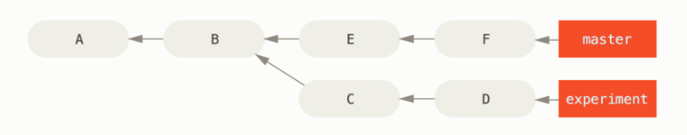
你想要查看 experiment 分支中还有哪些提交尚未被合并入 master 分支。 你可以使用 master..experiment 来让 Git 显示这些提交。也就是“在 experiment 分支中而不在 master 分支中的提交”。 为了使例子简单明了，我使用了示意图中提交对象的字母来代替真实日志的输出，所以会显示：
1 | $ git log master..experiment |
反过来，如果你想查看在 master 分支中而不在 experiment 分支中的提交，你只要交换分支名即可。 experiment..master 会显示在 master 分支中而不在 experiment 分支中的提交：
1 | $ git log experiment..master |
这可以让你保持 experiment 分支跟随最新的进度以及查看你即将合并的内容。 另一个常用的场景是查看你即将推送到远端的内容：
1 | $ git log origin/master..HEAD |
这个命令会输出在你当前分支中而不在远程 origin 中的提交。 如果你执行 git push 并且你的当前分支正在跟踪 origin/master，由 git log origin/master..HEAD 所输出的提交就是会被传输到远端服务器的提交。 如果你留空了其中的一边， Git 会默认为 HEAD。 例如， git log origin/master.. 将会输出与之前例子相同的结果 —— Git 使用 HEAD 来代替留空的一边。
多点
双点语法很好用，但有时候你可能需要两个以上的分支才能确定你所需要的修订，比如查看哪些提交是被包含在某些分支中的一个，但是不在你当前的分支上。 Git 允许你在任意引用前加上 ^ 字符或者 --not 来指明你不希望提交被包含其中的分支。 因此下列3个命令是等价的：
1 | $ git log refA..refB |
这个语法很好用，因为你可以在查询中指定超过两个的引用，这是双点语法无法实现的。 比如，你想查看所有被 refA 或 refB 包含的但是不被 refC 包含的提交，你可以输入下面中的任意一个命令
1 | $ git log refA refB ^refC |
这就构成了一个十分强大的修订查询系统，你可以通过它来查看你的分支里包含了哪些东西。
三点
最后一种主要的区间选择语法是三点，这个语法可以选择出被两个引用中的一个包含但又不被两者同时包含的提交。 再看看之前双点例子中的提交历史。 如果你想看 master 或者 experiment 中包含的但不是两者共有的提交，你可以执行
1 | $ git log master...experiment |
这和通常 log 按日期排序的输出一样，仅仅给出了4个提交的信息。
这种情形下，log 命令的一个常用参数是 --left-right，它会显示每个提交到底处于哪一侧的分支。 这会让输出数据更加清晰。
1 | $ git log --left-right master...experiment |
有了这些工具，你就可以十分方便地查看你 Git 仓库中的提交。
交互式暂存
Git 自带的一些脚本可以使在命令行下工作更容易。 本节的几个交互命令可以帮助你将文件的特定部分组合成提交。 当你修改一组文件后，希望这些改动能放到若干提交而不是混杂在一起成为一个提交时，这几个工具会非常有用。 通过这种方式，可以确保提交是逻辑上独立的变更集，同时也会使其他开发者在与你工作时很容易地审核。 如果运行 git add 时使用 -i 或者 --interactive 选项，Git 将会进入一个交互式终端模式，显示类似下面的东西：
1 | $ git add -i |
可以看到这个命令以非常不同的视图显示了暂存区——基本上与 git status 是相同的信息，但是更简明扼要一些。 它将暂存的修改列在左侧，未暂存的修改列在右侧。
在这块区域后是命令区域。 在这里你可以做一些工作，包括暂存文件、取消暂存文件、暂存文件的一部分、添加未被追踪的文件、查看暂存内容的区别。
暂存与取消暂存文件
如果在 What now> 提示符后键入 2 或 u，脚本将会提示想要暂存哪个文件：
1 | What now> 2 |
要暂存 TODO 与 index.html 文件，可以输入数字：
1 | Update>> 1,2 |
每个文件前面的 * 意味着选中的文件将会被暂存。 如果在 Update>> 提示符后不输入任何东西并直接按回车，Git 将会暂存之前选择的文件：
1 | Update>> |
现在可以看到 TODO 与 index.html 文件已经被暂存而 simplegit.rb 文件还未被暂存。 如果这时想要取消暂存 TODO 文件，使用 3 或 r（撤消）选项：
1 | *** Commands *** |
再次查看 Git 状态，可以看到已经取消暂存 TODO 文件：
1 | *** Commands *** |
如果想要查看已暂存内容的区别，可以使用 6 或 d（区别）命令。 它会显示暂存文件的一个列表，可以从中选择想要查看的暂存区别。 这跟你在命令行指定 git diff --cached 非常相似：
1 | *** Commands *** |
通过这些基本命令，可以使用交互式添加模式来轻松地处理暂存区。
暂存补丁
Git 也可以暂存文件的特定部分。 例如，如果在 simplegit.rb 文件中做了两处修改，但只想要暂存其中的一个而不是另一个，Git 会帮你轻松地完成。 从交互式提示符中，输入 5 或 p（补丁）。 Git 会询问你想要部分暂存哪些文件；然后，对已选择文件的每一个部分，它都会一个个地显示文件区别并询问你是否想要暂存它们：
1 | diff --git a/lib/simplegit.rb b/lib/simplegit.rb |
这时有很多选项。 输入 ? 显示所有可以使用的命令列表：
1 | Stage this hunk [y,n,a,d,/,j,J,g,e,?]? ? |
通常情况下可以输入 y 或 n 来选择是否要暂存每一个区块，当然，暂存特定文件中的所有部分或为之后的选择跳过一个区块也是非常有用的。 如果你只暂存文件的一部分，状态输出可能会像下面这样：
1 | What now> 1 |
simplegit.rb 文件的状态很有趣。 它显示出若干行被暂存与若干行未被暂存。 已经部分地暂存了这个文件。 在这时，可以退出交互式添加脚本并且运行 git commit 来提交部分暂存的文件。
也可以不必在交互式添加模式中做部分文件暂存——可以在命令行中使用 git add -p 或 git add --patch 来启动同样的脚本。
更进一步地，可以使用 reset --patch 命令的补丁模式来部分重置文件，通过 checkout --patch 命令来部分检出文件与 stash save --patch 命令来部分暂存文件。 我们将会在接触这些命令的高级使用方法时了解更多详细信息。
储藏与清理
有时，当你在项目的一部分上已经工作一段时间后，所有东西都进入了混乱的状态，而这时你想要切换到另一个分支做一点别的事情。 问题是，你不想仅仅因为过会儿回到这一点而为做了一半的工作创建一次提交。 针对这个问题的答案是 git stash 命令。
储藏会处理工作目录的脏的状态——即跟踪文件的修改与暂存的改动——然后将未完成的修改保存到一个栈上，而你可以在任何时候重新应用这些改动。
储藏工作
为了演示，进入项目并改动几个文件，然后可能暂存其中的一个改动。 如果运行 git status，可以看到有改动的状态：
1 | $ git status |
现在想要切换分支，但是还不想要提交之前的工作；所以储藏修改。 将新的储藏推送到栈上，运行 git stash 或 git stash save：
1 | $ git stash |
工作目录是干净的了：
1 | $ git status |
在这时，你能够轻易地切换分支并在其他地方工作；你的修改被存储在栈上。 要查看储藏的东西，可以使用 git stash list：
1 | $ git stash list |
在本例中，有两个之前做的储藏，所以你接触到了三个不同的储藏工作。 可以通过原来 stash 命令的帮助提示中的命令将你刚刚储藏的工作重新应用：git stash apply。 如果想要应用其中一个更旧的储藏，可以通过名字指定它，像这样：git stash apply stash@{2}。 如果不指定一个储藏，Git 认为指定的是最近的储藏：
1 | $ git stash apply |
可以看到 Git 重新修改了当你保存储藏时撤消的文件。 在本例中，当尝试应用储藏时有一个干净的工作目录，并且尝试将它应用在保存它时所在的分支；但是有一个干净的工作目录与应用在同一分支并不是成功应用储藏的充分必要条件。 可以在一个分支上保存一个储藏，切换到另一个分支，然后尝试重新应用这些修改。 当应用储藏时工作目录中也可以有修改与未提交的文件——如果有任何东西不能干净地应用，Git 会产生合并冲突。
文件的改动被重新应用了，但是之前暂存的文件却没有重新暂存。 想要那样的话，必须使用 --index 选项来运行 git stash apply 命令，来尝试重新应用暂存的修改。 如果已经那样做了，那么你将回到原来的位置：
1 | $ git stash apply --index |
应用选项只会尝试应用暂存的工作——在堆栈上还有它。 可以运行 git stash drop 加上将要移除的储藏的名字来移除它：
1 | $ git stash list |
也可以运行 git stash pop 来应用储藏然后立即从栈上扔掉它。
创造性的储藏
有几个储藏的变种可能也很有用。 第一个非常流行的选项是 stash save 命令的 --keep-index 选项。 它告诉 Git 不要储藏任何你通过 git add 命令已暂存的东西。
当你做了几个改动并只想提交其中的一部分，过一会儿再回来处理剩余改动时，这个功能会很有用。
1 | $ git status -s |
另一个经常使用储藏来做的事情是像储藏跟踪文件一样储藏未跟踪文件。 默认情况下，git stash 只会储藏已经在索引中的文件。 如果指定 --include-untracked 或 -u 标记，Git 也会储藏任何创建的未跟踪文件。
1 | $ git status -s |
最终，如果指定了 --patch 标记，Git 不会储藏所有修改过的任何东西，但是会交互式地提示哪些改动想要储藏、哪些改动需要保存在工作目录中。
1 | $ git stash --patch |
从储藏创建一个分支
如果储藏了一些工作，将它留在那儿了一会儿，然后继续在储藏的分支上工作，在重新应用工作时可能会有问题。 如果应用尝试修改刚刚修改的文件，你会得到一个合并冲突并不得不解决它。 如果想要一个轻松的方式来再次测试储藏的改动，可以运行 git stash branch 创建一个新分支，检出储藏工作时所在的提交，重新在那应用工作，然后在应用成功后扔掉储藏：
1 | $ git stash branch testchanges |
这是在新分支轻松恢复储藏工作并继续工作的一个很不错的途径。
清理工作目录
对于工作目录中一些工作或文件，你想做的也许不是储藏而是移除。 git clean 命令会帮你做这些事。
有一些通用的原因比如说为了移除由合并或外部工具生成的东西，或是为了运行一个干净的构建而移除之前构建的残留。
你需要谨慎地使用这个命令，因为它被设计为从工作目录中移除未被追踪的文件。 如果你改变主意了，你也不一定能找回来那些文件的内容。 一个更安全的选项是运行 git stash --all 来移除每一样东西并存放在栈中。
你可以使用 git clean 命令去除冗余文件或者清理工作目录。 使用 git clean -f -d 命令来移除工作目录中所有未追踪的文件以及空的子目录。 -f 意味着 强制 或 “确定移除”。
如果只是想要看看它会做什么，可以使用 -n 选项来运行命令，这意味着 “做一次演习然后告诉你 将要 移除什么”。
1 | $ git clean -d -n |
默认情况下，git clean 命令只会移除没有忽略的未跟踪文件。 任何与 .gitiignore 或其他忽略文件中的模式匹配的文件都不会被移除。 如果你也想要移除那些文件，例如为了做一次完全干净的构建而移除所有由构建生成的 .o 文件，可以给 clean 命令增加一个 -x 选项。
1 | $ git status -s |
如果不知道 git clean 命令将会做什么，在将 -n 改为 -f 来真正做之前总是先用 -n 来运行它做双重检查。 另一个小心处理过程的方式是使用 -i 或 “interactive” 标记来运行它。
这将会以交互模式运行 clean 命令。
1 | $ git clean -x -i |
这种方式下可以分别地检查每一个文件或者交互地指定删除的模式。
签署工作
Git 虽然是密码级安全的，但它不是万无一失的。 如果你从因特网上的其他人那里拿取工作，并且想要验证提交是不是真正地来自于可信来源，Git 提供了几种通过 GPG 来签署和验证工作的方式。
GPG 介绍
首先，在开始签名之前你需要先配置 GPG 并安装个人密钥。
1 | $ gpg --list-keys |
如果你还没有安装一个密钥，可以使用 gpg --gen-key 生成一个。
1 | gpg --gen-key |
一旦你有一个可以签署的私钥，可以通过设置 Git 的 user.signingkey 选项来签署。
1 | git config --global user.signingkey 0A46826A |
现在 Git 默认使用你的密钥来签署标签与提交。
签署标签
如果已经设置好一个 GPG 私钥，可以使用它来签署新的标签。 所有需要做的只是使用 -s 代替 -a 即可：
1 | $ git tag -s v1.5 -m 'my signed 1.5 tag' |
如果在那个标签上运行 git show，会看到你的 GPG 签名附属在后面：
1 | $ git show v1.5 |
验证标签
要验证一个签署的标签，可以运行 git tag -v [tag-name]。 这个命令使用 GPG 来验证签名。 为了验证能正常工作，签署者的公钥需要在你的钥匙链中。
1 | $ git tag -v v1.4.2.1 |
如果没有签署者的公钥，那么你将会得到类似下面的东西：
1 | gpg: Signature made Wed Sep 13 02:08:25 2006 PDT using DSA key ID F3119B9A |
签署提交
在最新版本的 Git 中（v1.7.9 及以上），也可以签署个人提交。 如果相对于标签而言你对直接签署到提交更感兴趣的话，所有要做的只是增加一个 -S 到 git commit 命令。
1 | $ git commit -a -S -m 'signed commit' |
另外，也可以配置 git log 来验证任何找到的签名并将它们以 %G? 格式列在输出中。
1 | $ git log --pretty="format:%h %G? %aN %s" |
这里我们可以看到只有最后一次提交是签署并有效的，而之前的提交都不是。
在 Git 1.8.3 及以后的版本中，“git merge” 与“git pull” 可以使用 --verify-signatures 选项来检查并拒绝没有携带可信 GPG 签名的提交。
如果使用这个选项来合并一个包含未签名或有效的提交的分支时，合并不会生效。
1 | $ git merge --verify-signatures non-verify |
如果合并包含的只有有效的签名的提交，合并命令会提示所有的签名它已经检查过了然后会继续向前。
1 | $ git merge --verify-signatures signed-branch |
也可以给 git merge 命令附加 -S 选项来签署自己生成的合并提交。 下面的例子演示了验证将要合并的分支的每一个提交都是签名的并且签署最后生成的合并提交。
1 | $ git merge --verify-signatures -S signed-branch |
每个人必须签署
签署标签与提交很棒，但是如果决定在正常的工作流程中使用它，你必须确保团队中的每一个人都理解如何这样做。 如果没有，你将会花费大量时间帮助其他人找出并用签名的版本重写提交。 在采用签署成为标准工作流程的一部分前，确保你完全理解 GPG 及签署带来的好处。
搜索
无论仓库里的代码量有多少，你经常需要查找一个函数是在哪里调用或者定义的，或者一个方法的变更历史。 Git 提供了两个有用的工具来快速地从它的数据库中浏览代码和提交。 我们来简单的看一下。
Git Grep
Git 提供了一个 grep 命令，你可以很方便地从提交历史或者工作目录中查找一个字符串或者正则表达式。 我们用 Git 本身源代码的查找作为例子。
默认情况下 Git 会查找你工作目录的文件。 你可以传入 -n 参数来输出 Git 所找到的匹配行行号。
1 | $ git grep -n gmtime_r |
grep 命令有一些有趣的选项。
例如，你可以使用 --count 选项来使 Git 输出概述的信息，仅仅包括哪些文件包含匹配以及每个文件包含了多少个匹配。
1 | $ git grep --count gmtime_r |
如果你想看匹配的行是属于哪一个方法或者函数，你可以传入 -p 选项：
1 | $ git grep -p gmtime_r *.c |
在这里我们可以看到在 date.c 文件中有 match_multi_number 和 match_digit 两个函数调用了 gmtime_r。
你还可以使用 --and 标志来查看复杂的字符串组合，也就是在同一行同时包含多个匹配。 比如，我们要查看在旧版本 1.8.0 的 Git 代码库中定义了常量名包含 “LINK” 或者 “BUF_MAX” 这两个字符串所在的行。
这里我们也用到了 --break 和 --heading 选项来使输出更加容易阅读。
1 | $ git grep --break --heading \ |
相比于一些常用的搜索命令比如 grep 和 ack，git grep 命令有一些的优点。 第一就是速度非常快，第二是你不仅仅可以可以搜索工作目录，还可以搜索任意的 Git 树。 在上一个例子中，我们在一个旧版本的 Git 源代码中查找，而不是当前检出的版本。
Git 日志搜索
或许你不想知道某一项在 哪里 ，而是想知道是什么 时候 存在或者引入的。 git log 命令有许多强大的工具可以通过提交信息甚至是 diff 的内容来找到某个特定的提交。
例如，如果我们想找到 ZLIB_BUF_MAX 常量是什么时候引入的，我们可以使用 -S 选项来显示新增和删除该字符串的提交。
1 | $ git log -SZLIB_BUF_MAX --oneline |
如果我们查看这些提交的 diff，我们可以看到在 ef49a7a 这个提交引入了常量，并且在 e01503b 这个提交中被修改了。
如果你希望得到更精确的结果，你可以使用 -G 选项来使用正则表达式搜索。
行日志搜索
行日志搜索是另一个相当高级并且有用的日志搜索功能。 这是一个最近新增的不太知名的功能，但却是十分有用。 在 git log 后加上 -L 选项即可调用，它可以展示代码中一行或者一个函数的历史。
例如，假设我们想查看 zlib.c 文件中git_deflate_bound 函数的每一次变更，我们可以执行 git log -L :git_deflate_bound:zlib.c。 Git 会尝试找出这个函数的范围，然后查找历史记录，并且显示从函数创建之后一系列变更对应的补丁。
1 | $ git log -L :git_deflate_bound:zlib.c |
如果 Git 无法计算出如何匹配你代码中的函数或者方法，你可以提供一个正则表达式。 例如，这个命令和上面的是等同的：git log -L '/unsigned long git_deflate_bound/',/^}/:zlib.c。 你也可以提供单行或者一个范围的行号来获得相同的输出。
重写历史
许多时候，在使用 Git 时，可能会因为某些原因想要修正提交历史。 Git 很棒的一点是它允许你在最后时刻做决定。 你可以在将暂存区内容提交前决定哪些文件进入提交，可以通过 stash 命令来决定不与某些内容工作，也可以重写已经发生的提交就像它们以另一种方式发生的一样。 这可能涉及改变提交的顺序，改变提交中的信息或修改文件，将提交压缩或是拆分，或完全地移除提交——在将你的工作成果与他人共享之前。
在本节中，你可以学到如何完成这些非常有用的工作，这样在与他人分享你的工作成果时你的提交历史将如你所愿地展示出来。
修改最后一次提交
修改你最近一次提交可能是所有修改历史提交的操作中最常见的一个。 对于你的最近一次提交，你往往想做两件事情：修改提交信息，或者修改你添加、修改和移除的文件的快照。
如果，你只是想修改最近一次提交的提交信息，那么很简单：
1 | $ git commit --amend |
这会把你带入文本编辑器，里面包含了你最近一条提交信息，供你修改。 当保存并关闭编辑器后，编辑器将会用你输入的内容替换最近一条提交信息。
如果你已经完成提交，又因为之前提交时忘记添加一个新创建的文件，想通过添加或修改文件来更改提交的快照，也可以通过类似的操作来完成。 通过修改文件然后运行 git add 或 git rm 一个已追踪的文件，随后运行 git commit --amend 拿走当前的暂存区域并使其做为新提交的快照。
使用这个技巧的时候需要小心，因为修正会改变提交的 SHA-1 校验和。 它类似于一个小的变基——如果已经推送了最后一次提交就不要修正它。
修改多个提交信息
为了修改在提交历史中较远的提交，必须使用更复杂的工具。 Git 没有一个改变历史工具，但是可以使用变基工具来变基一系列提交，基于它们原来的 HEAD 而不是将其移动到另一个新的上面。 通过交互式变基工具，可以在任何想要修改的提交后停止，然后修改信息、添加文件或做任何想做的事情。 可以通过给 git rebase 增加 -i 选项来交互式地运行变基。 必须指定想要重写多久远的历史，这可以通过告诉命令将要变基到的提交来做到。
例如，如果想要修改最近三次提交信息，或者那组提交中的任意一个提交信息，将想要修改的最近一次提交的父提交作为参数传递给 git rebase -i 命令，即 HEAD~2^ 或 HEAD~3。 记住 ~3 可能比较容易，因为你正尝试修改最后三次提交；但是注意实际上指定了以前的四次提交，即想要修改提交的父提交：
1 | $ git rebase -i HEAD~3 |
再次记住这是一个变基命令——在 HEAD~3..HEAD 范围内的每一个提交都会被重写，无论你是否修改信息。 不要涉及任何已经推送到中央服务器的提交——这样做会产生一次变更的两个版本，因而使他人困惑。
运行这个命令会在文本编辑器上给你一个提交的列表，看起来像下面这样：
1 | pick f7f3f6d changed my name a bit |
需要重点注意的是相对于正常使用的 log 命令，这些提交显示的顺序是相反的。 运行一次 log 命令，会看到类似这样的东西：
1 | $ git log --pretty=format:"%h %s" HEAD~3..HEAD |
注意其中的反序显示。 交互式变基给你一个它将会运行的脚本。 它将会从你在命令行中指定的提交（HEAD~3）开始，从上到下的依次重演每一个提交引入的修改。 它将最旧的而不是最新的列在上面，因为那会是第一个将要重演的。
你需要修改脚本来让它停留在你想修改的变更上。 要达到这个目的，你只要将你想修改的每一次提交前面的 ‘pick’ 改为 ‘edit’。 例如，只想修改第三次提交信息，可以像下面这样修改文件：
1 | edit f7f3f6d changed my name a bit |
当保存并退出编辑器时，Git 将你带回到列表中的最后一次提交，把你送回命令行并提示以下信息：
1 | $ git rebase -i HEAD~3 |
这些指令准确地告诉你该做什么。 输入
1 | $ git commit --amend |
修改提交信息，然后退出编辑器。 然后，运行
1 | $ git rebase --continue |
这个命令将会自动地应用另外两个提交，然后就完成了。 如果需要将不止一处的 pick 改为 edit，需要在每一个修改为 edit 的提交上重复这些步骤。 每一次，Git 将会停止，让你修正提交，然后继续直到完成。
重新排序提交
也可以使用交互式变基来重新排序或完全移除提交。 如果想要移除 “added cat-file” 提交然后修改另外两个提交引入的顺序，可以将变基脚本从这样：
1 | pick f7f3f6d changed my name a bit |
改为这样：
1 | pick 310154e updated README formatting and added blame |
当保存并退出编辑器时，Git 将你的分支带回这些提交的父提交，应用 310154e 然后应用 f7f3f6d，最后停止。 事实修改了那些提交的顺序并完全地移除了 “added cat-file” 提交。
压缩提交
通过交互式变基工具，也可以将一连串提交压缩成一个单独的提交。 在变基信息中脚本给出了有用的指令：
1 | # |
如果，指定 “squash” 而不是 “pick” 或 “edit”，Git 将应用两者的修改并合并提交信息在一起。 所以，如果想要这三次提交变为一个提交，可以这样修改脚本：
1 | pick f7f3f6d changed my name a bit |
当保存并退出编辑器时，Git 应用所有的三次修改然后将你放到编辑器中来合并三次提交信息：
1 | # This is a combination of 3 commits. |
当你保存之后，你就拥有了一个包含前三次提交的全部变更的提交。
拆分提交
拆分一个提交会撤消这个提交，然后多次地部分地暂存与提交直到完成你所需次数的提交。 例如，假设想要拆分三次提交的中间那次提交。 想要将它拆分为两次提交：第一个 “updated README formatting”，第二个 “added blame” 来代替原来的 “updated README formatting and added blame”。 可以通过修改 rebase -i 的脚本来做到这点，将要拆分的提交的指令修改为 “edit”：
1 | pick f7f3f6d changed my name a bit |
然后，当脚本将你进入到命令行时，重置那个提交，拿到被重置的修改，从中创建几次提交。 当保存并退出编辑器时，Git 带你到列表中第一个提交的父提交，应用第一个提交（f7f3f6d），应用第二个提交（310154e），然后让你进入命令行。 那里，可以通过 git reset HEAD^ 做一次针对那个提交的混合重置，实际上将会撤消那次提交并将修改的文件未暂存。 现在可以暂存并提交文件直到有几个提交，然后当完成时运行 git rebase --continue：
1 | $ git reset HEAD^ |
Git 在脚本中应用最后一次提交（a5f4a0d），历史记录看起来像这样：
1 | $ git log -4 --pretty=format:"%h %s" |
再次强调，这些改动了所有在列表中的提交的 SHA-1 校验和，所以要确保列表中的提交还没有推送到共享仓库中。
核武器级选项：filter-branch
有另一个历史改写的选项，如果想要通过脚本的方式改写大量提交的话可以使用它——例如，全局修改你的邮箱地址或从每一个提交中移除一个文件。 这个命令是 filter-branch，它可以改写历史中大量的提交，除非你的项目还没有公开并且其他人没有基于要改写的工作的提交做的工作，你不应当使用它。 然而，它可以很有用。 你将会学习到几个常用的用途，这样就得到了它适合使用地方的想法。
从每一个提交移除一个文件
这经常发生。 有人粗心地通过 git add . 提交了一个巨大的二进制文件，你想要从所有地方删除它。 可能偶然地提交了一个包括一个密码的文件，然而你想要开源项目。 filter-branch 是一个可能会用来擦洗整个提交历史的工具。 为了从整个提交历史中移除一个叫做 passwords.txt 的文件，可以使用 --tree-filter 选项给 filter-branch：
1 | $ git filter-branch --tree-filter 'rm -f passwords.txt' HEAD |
--tree-filter 选项在检出项目的每一个提交后运行指定的命令然后重新提交结果。 在本例中，你从每一个快照中移除了一个叫作 passwords.txt 的文件，无论它是否存在。 如果想要移除所有偶然提交的编辑器备份文件，可以运行类似 git filter-branch --tree-filter 'rm -f *~' HEAD 的命令。
最后将可以看到 Git 重写树与提交然后移动分支指针。 通常一个好的想法是在一个测试分支中做这件事，然后当你决定最终结果是真正想要的，可以硬重置 master 分支。 为了让 filter-branch 在所有分支上运行，可以给命令传递 --all 选项。
使一个子目录做为新的根目录
假设已经从另一个源代码控制系统中导入，并且有几个没意义的子目录（trunk、tags 等等）。 如果想要让 trunk 子目录作为每一个提交的新的项目根目录，filter-branch 也可以帮助你那么做：
1 | $ git filter-branch --subdirectory-filter trunk HEAD |
现在新项目根目录是 trunk 子目录了。 Git 会自动移除所有不影响子目录的提交。
全局修改邮箱地址
另一个常见的情形是在你开始工作时忘记运行 git config 来设置你的名字与邮箱地址，或者你想要开源一个项目并且修改所有你的工作邮箱地址为你的个人邮箱地址。 任何情形下，你也可以通过 filter-branch 来一次性修改多个提交中的邮箱地址。 需要小心的是只修改你自己的邮箱地址，所以你使用 --commit-filter：
1 | $ git filter-branch --commit-filter ' |
这会遍历并重写每一个提交来包含你的新邮箱地址。 因为提交包含了它们父提交的 SHA-1 校验和，这个命令会修改你的历史中的每一个提交的 SHA-1 校验和，而不仅仅只是那些匹配邮箱地址的提交。
重置揭密
在继续了解更专业的工具前，我们先讨论一下 reset 与 checkout。 在你初次遇到的 Git 命令中，这两个是最让人困惑的。 它们能做很多事情，所以看起来我们很难真正地理解并恰当地运用它们。 针对这一点，我们先来做一个简单的比喻。
三棵树
理解 reset 和 checkout 的最简方法，就是以 Git 的思维框架（将其作为内容管理器）来管理三棵不同的树。 “树” 在我们这里的实际意思是 “文件的集合”，而不是指特定的数据结构。 （在某些情况下索引看起来并不像一棵树，不过我们现在的目的是用简单的方式思考它。）
Git 作为一个系统，是以它的一般操作来管理并操纵这三棵树的：
| 树 | 用途 |
|---|---|
| HEAD | 上一次提交的快照，下一次提交的父结点 |
| Index | 预期的下一次提交的快照 |
| Working Directory | 沙盒 |
HEAD
HEAD 是当前分支引用的指针，它总是指向该分支上的最后一次提交。 这表示 HEAD 将是下一次提交的父结点。 通常，理解 HEAD 的最简方式，就是将它看做 你的上一次提交 的快照。
其实，查看快照的样子很容易。 下例就显示了 HEAD 快照实际的目录列表，以及其中每个文件的 SHA-1 校验和：
1 | $ git cat-file -p HEAD |
cat-file 与 ls-tree 是底层命令，它们一般用于底层工作，在日常工作中并不使用。不过它们能帮助我们了解到底发生了什么。
索引
索引是你的 预期的下一次提交。 我们也会将这个概念引用为 Git 的“暂存区域”，这就是当你运行 git commit 时 Git 看起来的样子。
Git 将上一次检出到工作目录中的所有文件填充到索引区，它们看起来就像最初被检出时的样子。 之后你会将其中一些文件替换为新版本，接着通过 git commit 将它们转换为树来用作新的提交。
1 | $ git ls-files -s |
再说一次，我们在这里又用到了 ls-files 这个幕后的命令，它会显示出索引当前的样子。
确切来说，索引并非技术上的树结构，它其实是以扁平的清单实现的。不过对我们而言，把它当做树就够了。
工作目录
最后，你就有了自己的工作目录。 另外两棵树以一种高效但并不直观的方式，将它们的内容存储在 .git 文件夹中。 工作目录会将它们解包为实际的文件以便编辑。 你可以把工作目录当做 沙盒。在你将修改提交到暂存区并记录到历史之前，可以随意更改。
1 | $ tree |
工作流程
Git 主要的目的是通过操纵这三棵树来以更加连续的状态记录项目的快照。
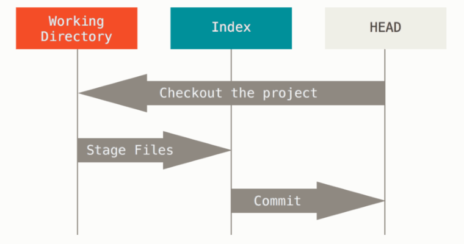
让我们来可视化这个过程：假设我们进入到一个新目录，其中有一个文件。 我们称其为该文件的 v1 版本，将它标记为蓝色。 现在运行 git init，这会创建一个 Git 仓库，其中的 HEAD 引用指向未创建的分支（master 还不存在）。
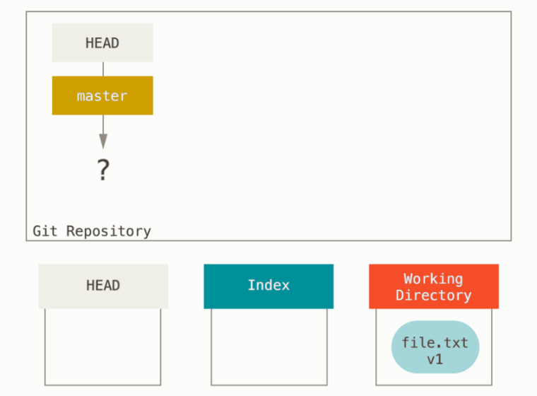
此时，只有工作目录有内容。
现在我们想要提交这个文件，所以用 git add 来获取工作目录中的内容，并将其复制到索引中。
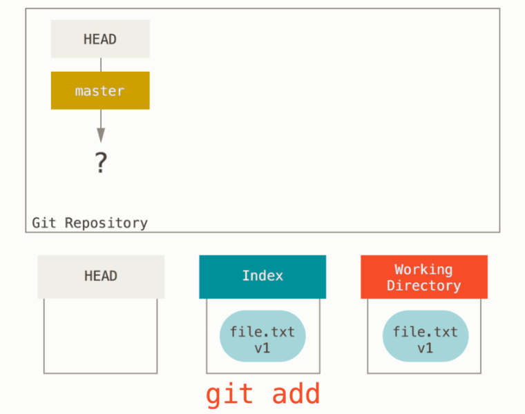
接着运行 git commit，它会取得索引中的内容并将它保存为一个永久的快照，然后创建一个指向该快照的提交对象，最后更新 master 来指向本次提交。
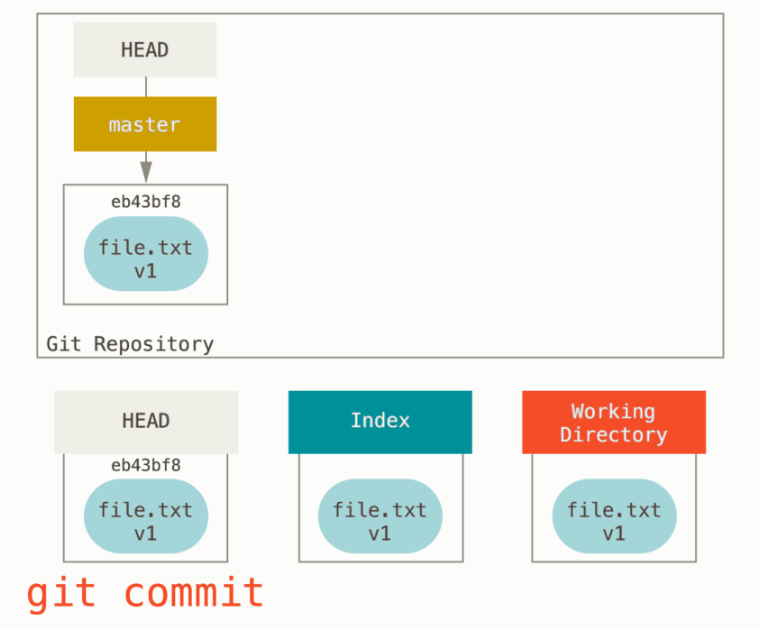
此时如果我们运行 git status，会发现没有任何改动，因为现在三棵树完全相同。
现在我们想要对文件进行修改然后提交它。 我们将会经历同样的过程；首先在工作目录中修改文件。 我们称其为该文件的 v2 版本，并将它标记为红色。
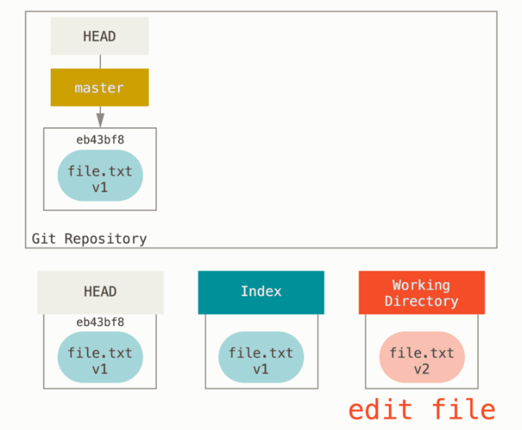
如果现在运行 git status，我们会看到文件显示在 “Changes not staged for commit” 下面并被标记为红色，因为该条目在索引与工作目录之间存在不同。 接着我们运行 git add 来将它暂存到索引中。
此时，由于索引和 HEAD 不同，若运行 git status 的话就会看到 “Changes to be committed” 下的该文件变为绿色 ——也就是说，现在预期的下一次提交与上一次提交不同。 最后，我们运行 git commit 来完成提交。
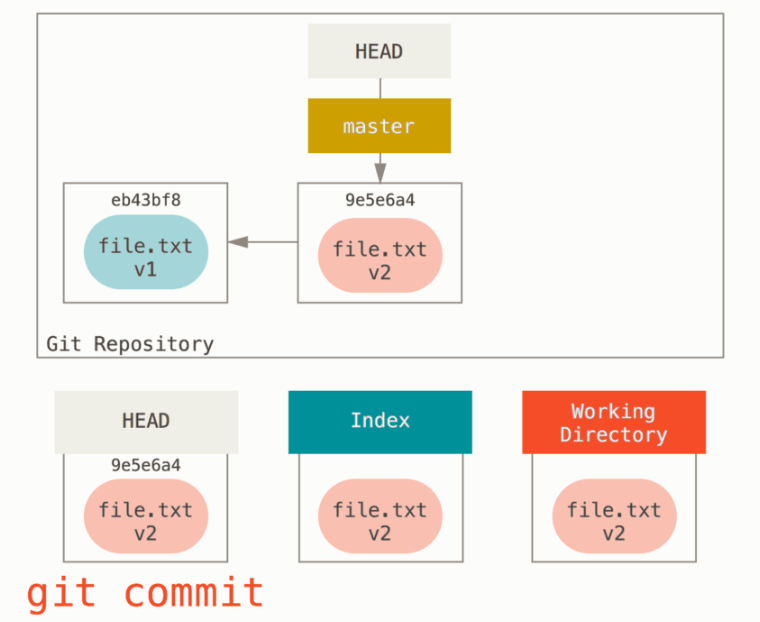
现在运行 git status 会没有输出，因为三棵树又变得相同了。
切换分支或克隆的过程也类似。 当检出一个分支时，它会修改 HEAD 指向新的分支引用，将 索引 填充为该次提交的快照，然后将 索引 的内容复制到 工作目录 中。
重置的作用
在以下情景中观察 reset 命令会更有意义。
为了演示这些例子，假设我们再次修改了 file.txt 文件并第三次提交它。 现在的历史看起来是这样的：
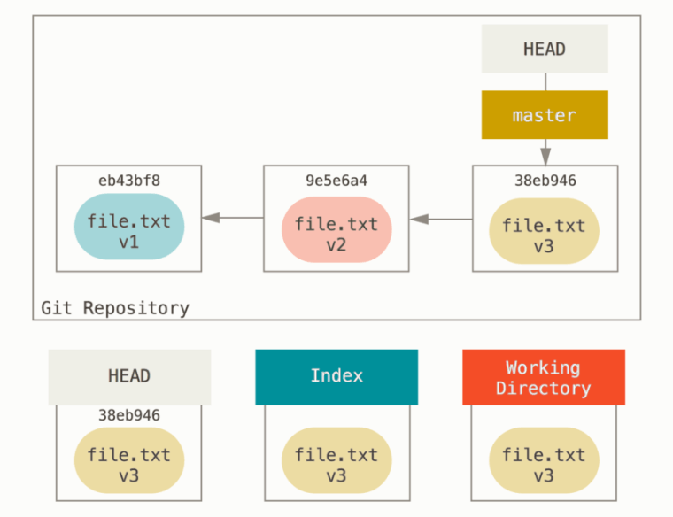
让我们跟着 reset 看看它都做了什么。 它以一种简单可预见的方式直接操纵这三棵树。 它做了三个基本操作。
第 1 步：移动 HEADreset 做的第一件事是移动 HEAD 的指向。 这与改变 HEAD 自身不同（checkout 所做的）；reset 移动 HEAD 指向的分支。 这意味着如果 HEAD 设置为 master 分支（例如，你正在 master 分支上），运行 git reset 9e5e6a4 将会使 master 指向 9e5e6a4。
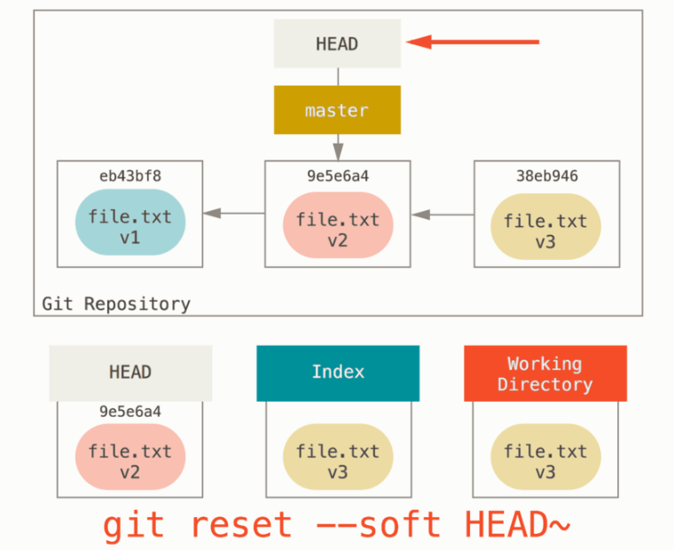
无论你调用了何种形式的带有一个提交的 reset，它首先都会尝试这样做。 使用 reset --soft，它将仅仅停在那儿。
现在看一眼上图，理解一下发生的事情：它本质上是撤销了上一次 git commit 命令。 当你在运行 git commit 时，Git 会创建一个新的提交，并移动 HEAD 所指向的分支来使其指向该提交。 当你将它 reset 回 HEAD~（HEAD 的父结点）时，其实就是把该分支移动回原来的位置，而不会改变索引和工作目录。 现在你可以更新索引并再次运行 git commit 来完成 git commit --amend 所要做的事情了（见 修改最后一次提交）。
第 2 步：更新索引（–mixed）
注意，如果你现在运行 git status 的话，就会看到新的 HEAD 和以绿色标出的它和索引之间的区别。
接下来，reset 会用 HEAD 指向的当前快照的内容来更新索引。
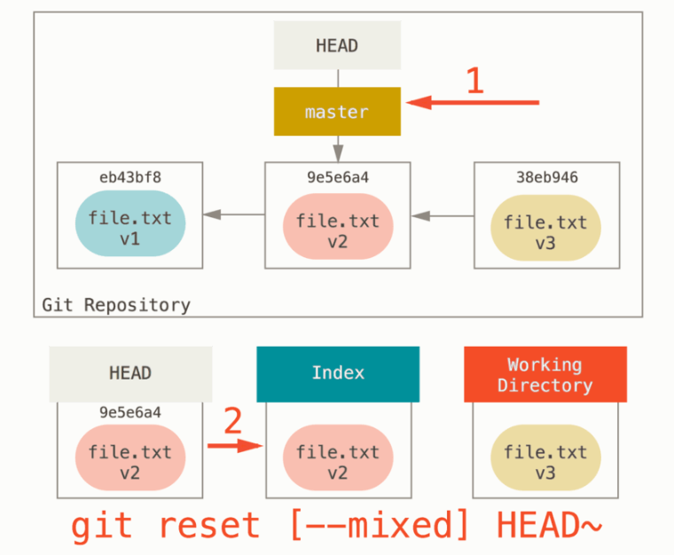
如果指定 --mixed 选项，reset 将会在这时停止。 这也是默认行为，所以如果没有指定任何选项（在本例中只是 git reset HEAD~），这就是命令将会停止的地方。
现在再看一眼上图，理解一下发生的事情：它依然会撤销一上次 提交，但还会 取消暂存 所有的东西。 于是，我们回滚到了所有 git add 和 git commit 的命令执行之前。
第 3 步：更新工作目录（–hard）reset 要做的的第三件事情就是让工作目录看起来像索引。 如果使用 --hard 选项，它将会继续这一步。
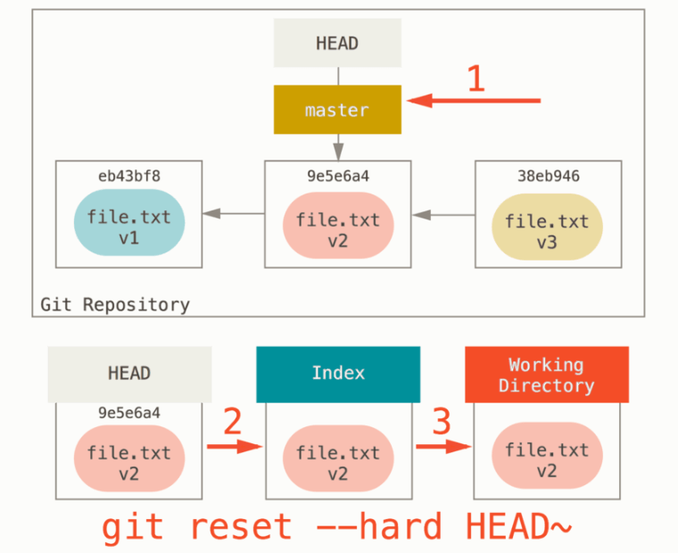
现在让我们回想一下刚才发生的事情。 你撤销了最后的提交 git add 和 git commit 命令以及工作目录中的所有工作。
必须注意，--hard 标记是 reset 命令唯一的危险用法，它也是 Git 会真正地销毁数据的仅有的几个操作之一。 其他任何形式的 reset 调用都可以轻松撤消，但是 --hard 选项不能，因为它强制覆盖了工作目录中的文件。 在这种特殊情况下，我们的 Git 数据库中的一个提交内还留有该文件的 v3 版本，我们可以通过 reflog 来找回它。但是若该文件还未提交，Git 仍会覆盖它从而导致无法恢复。
回顾reset 命令会以特定的顺序重写这三棵树，在你指定以下选项时停止：
移动 HEAD 分支的指向 （若指定了
--soft，则到此停止）使索引看起来像 HEAD （若未指定
--hard，则到此停止）使工作目录看起来像索引
通过路径来重置
前面讲述了 reset 基本形式的行为，不过你还可以给它提供一个作用路径。 若指定了一个路径，reset 将会跳过第 1 步，并且将它的作用范围限定为指定的文件或文件集合。 这样做自然有它的道理，因为 HEAD 只是一个指针，你无法让它同时指向两个提交中各自的一部分。 不过索引和工作目录 可以部分更新，所以重置会继续进行第 2、3 步。
现在，假如我们运行 git reset file.txt （这其实是 git reset --mixed HEAD file.txt 的简写形式，因为你既没有指定一个提交的 SHA-1 或分支，也没有指定 --soft 或 --hard），它会：
移动 HEAD 分支的指向 （已跳过）
让索引看起来像 HEAD （到此处停止）
所以它本质上只是将 file.txt 从 HEAD 复制到索引中。
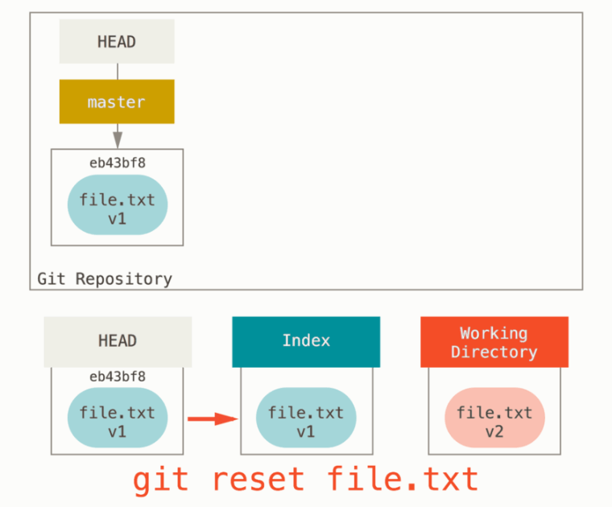
它还有 取消暂存文件 的实际效果。 如果我们查看该命令的示意图，然后再想想 git add 所做的事，就会发现它们正好相反。
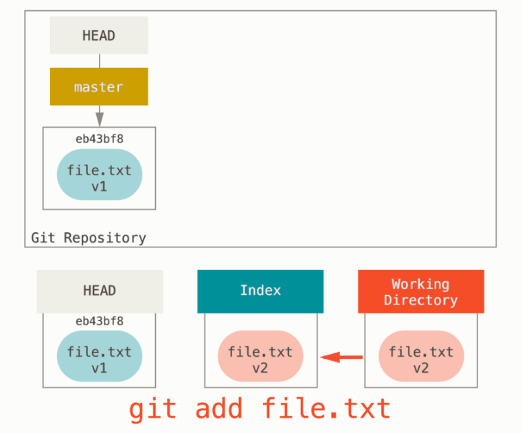
这就是为什么 git status 命令的输出会建议运行此命令来取消暂存一个文件。 （查看 取消暂存的文件 来了解更多。）
我们可以不让 Git 从 HEAD 拉取数据，而是通过具体指定一个提交来拉取该文件的对应版本。 我们只需运行类似于 git reset eb43bf file.txt 的命令即可。
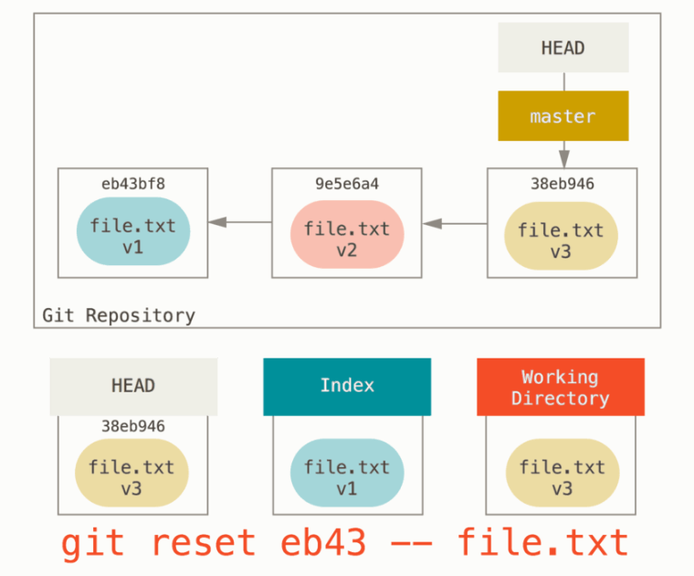
它其实做了同样的事情，也就是把工作目录中的文件恢复到 v1 版本，运行 git add 添加它，然后再将它恢复到 v3 版本（只是不用真的过一遍这些步骤）。 如果我们现在运行 git commit，它就会记录一条“将该文件恢复到 v1 版本”的更改，尽管我们并未在工作目录中真正地再次拥有它。
还有一点同 git add 一样，就是 reset 命令也可以接受一个 --patch 选项来一块一块地取消暂存的内容。 这样你就可以根据选择来取消暂存或恢复内容了。
压缩
我们来看看如何利用这种新的功能来做一些有趣的事情——压缩提交。
假设你的一系列提交信息中有 “oops.”“WIP” 和 “forgot this file”， 聪明的你就能使用 reset 来轻松快速地将它们压缩成单个提交，也显出你的聪明。 （压缩提交 展示了另一种方式，不过在本例中用 reset 更简单。）
假设你有一个项目，第一次提交中有一个文件，第二次提交增加了一个新的文件并修改了第一个文件，第三次提交再次修改了第一个文件。 由于第二次提交是一个未完成的工作，因此你想要压缩它。
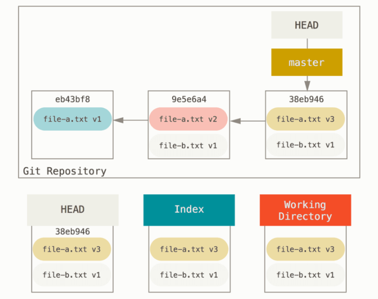
那么可以运行 git reset --soft HEAD~2 来将 HEAD 分支移动到一个旧一点的提交上（即你想要保留的第一个提交）：
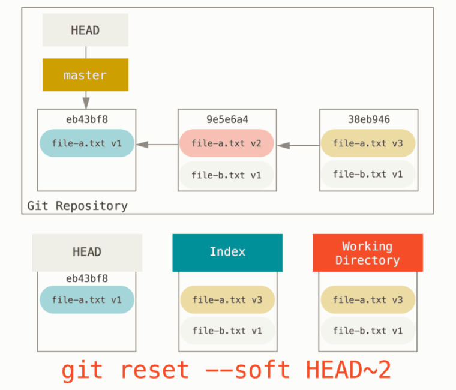
然后只需再次运行 git commit：
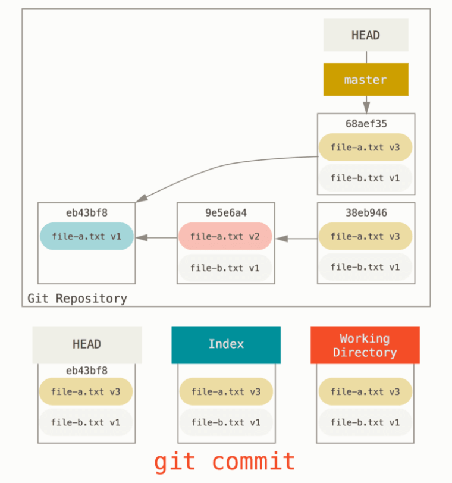
现在你可以查看可到达的历史，即将会推送的历史，现在看起来有个 v1 版 file-a.txt 的提交，接着第二个提交将 file-a.txt 修改成了 v3 版并增加了 file-b.txt。 包含 v2 版本的文件已经不在历史中了。
检出
最后，你大概还想知道 checkout 和 reset 之间的区别。 和 reset 一样，checkout 也操纵三棵树，不过它有一点不同，这取决于你是否传给该命令一个文件路径。
不带路径
运行 git checkout [branch] 与运行 git reset --hard [branch] 非常相似，它会更新所有三棵树使其看起来像 [branch]，不过有两点重要的区别。
首先不同于 reset --hard，checkout 对工作目录是安全的，它会通过检查来确保不会将已更改的文件弄丢。 其实它还更聪明一些。它会在工作目录中先试着简单合并一下，这样所有_还未修改过的_文件都会被更新。 而 reset --hard 则会不做检查就全面地替换所有东西。
第二个重要的区别是如何更新 HEAD。 reset 会移动 HEAD 分支的指向，而 checkout 只会移动 HEAD 自身来指向另一个分支。
例如，假设我们有 master 和 develop 分支，它们分别指向不同的提交；我们现在在 develop 上（所以 HEAD 指向它）。 如果我们运行 git reset master，那么 develop 自身现在会和 master 指向同一个提交。 而如果我们运行 git checkout master 的话，develop 不会移动，HEAD 自身会移动。 现在 HEAD 将会指向 master。
所以，虽然在这两种情况下我们都移动 HEAD 使其指向了提交 A，但_做法_是非常不同的。 reset 会移动 HEAD 分支的指向，而 checkout 则移动 HEAD 自身。
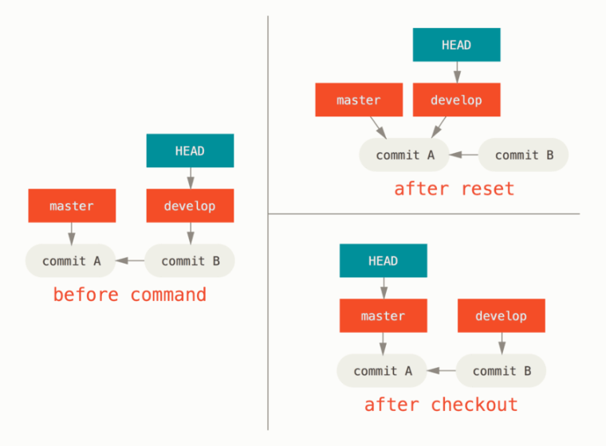
带路径
运行 checkout 的另一种方式就是指定一个文件路径，这会像 reset 一样不会移动 HEAD。 它就像 git reset [branch] file 那样用该次提交中的那个文件来更新索引，但是它也会覆盖工作目录中对应的文件。 它就像是 git reset --hard [branch] file（如果 reset 允许你这样运行的话）- 这样对工作目录并不安全，它也不会移动 HEAD。
此外，同 git reset 和 git add 一样，checkout 也接受一个 --patch 选项，允许你根据选择一块一块地恢复文件内容。
总结
希望你现在熟悉并理解了 reset 命令，不过关于它和 checkout 之间的区别，你可能还是会有点困惑，毕竟不太可能记住不同调用的所有规则。
下面的速查表列出了命令对树的影响。 “HEAD” 一列中的 “REF” 表示该命令移动了 HEAD 指向的分支引用，而 “HEAD” 则表示只移动了 HEAD 自身。 特别注意 WD Safe? 一列——如果它标记为 NO，那么运行该命令之前请考虑一下。
| HEAD | Index | Workdir | WD Safe? | |
|---|---|---|---|---|
| Commit Level | ||||
| reset –soft [commit] | REF | NO | NO | YES |
| reset [commit] | REF | YES | NO | YES |
| reset –hard [commit] | REF | YES | YES | NO |
| checkout [commit] | HEAD | YES | YES | YES |
| File Level | ||||
| reset (commit) [file] | NO | YES | NO | YES |
| checkout (commit) [file] | NO | YES | YES | NO |
高级合并
在 Git 中合并是相当容易的。 因为 Git 使多次合并另一个分支变得很容易，这意味着你可以有一个始终保持最新的长期分支，经常解决小的冲突，比在一系列提交后解决一个巨大的冲突要好。
然而，有时也会有棘手的冲突。 不像其他的版本控制系统，Git 并不会尝试过于聪明的合并冲突解决方案。 Git 的哲学是聪明地决定无歧义的合并方案，但是如果有冲突，它不会尝试智能地自动解决它。 因此，如果很久之后才合并两个分叉的分支，你可能会撞上一些问题。
在本节中，我们将会仔细查看那些问题是什么以及 Git 给了我们什么工具来帮助我们处理这些更难办的情形。我们也会了解你可以做的不同的、非标准类型的合并，也会看到如何后退到合并之前。
高级合并
我们在 遇到冲突时的分支合并 介绍了解决合并冲突的一些基础知识，对于更复杂的冲突，Git 提供了几个工具来帮助你指出将会发生什么以及如何更好地处理冲突。
首先，在做一次可能有冲突的合并前尽可能保证工作目录是干净的。 如果你有正在做的工作，要么提交到一个临时分支要么储藏它。 这使你可以撤消在这里尝试做的 任何事情 。 如果在你尝试一次合并时工作目录中有未保存的改动，下面的这些技巧可能会使你丢失那些工作。
让我们通过一个非常简单的例子来了解一下。 我们有一个超级简单的打印 hello world 的 Ruby 文件。
1 | #! /usr/bin/env ruby |
在我们的仓库中，创建一个名为 whitespace 的新分支并将所有 Unix 换行符修改为 DOS 换行符，实质上虽然改变了文件的每一行，但改变的都只是空白字符。 然后我们修改行 “hello world” 为 “hello mundo”。
1 | $ git checkout -b whitespace |
现在我们切换回我们的 master 分支并为函数增加一些注释。
1 | $ git checkout master |
现在我们尝试合并入我们的 whitespace 分支，因为修改了空白字符，所以合并会出现冲突。
1 | $ git merge whitespace |
中断一次合并
我们现在有几个选项。 首先，让我们介绍如何摆脱这个情况。 你可能不想处理冲突这种情况，完全可以通过 git merge --abort 来简单地退出合并。
1 | $ git status -sb |
git merge --abort 选项会尝试恢复到你运行合并前的状态。 但当运行命令前，在工作目录中有未储藏、未提交的修改时它不能完美处理，除此之外它都工作地很好。
如果因为某些原因你发现自己处在一个混乱的状态中然后只是想要重来一次，也可以运行 git reset --hard HEAD 回到之前的状态或其他你想要恢复的状态。 请牢记这会将清除工作目录中的所有内容，所以确保你不需要保存这里的任意改动。
忽略空白
在这个特定的例子中，冲突与空白有关。 我们知道这点是因为这个例子很简单，但是在实际的例子中发现这样的冲突也很容易，因为每一行都被移除而在另一边每一行又被加回来了。 默认情况下，Git 认为所有这些行都改动了，所以它不会合并文件。
默认合并策略可以带有参数，其中的几个正好是关于忽略空白改动的。 如果你看到在一次合并中有大量的空白问题，你可以简单地中止它并重做一次，这次使用 -Xignore-all-space 或 -Xignore-space-change 选项。 第一个选项忽略任意 数量 的已有空白的修改，第二个选项忽略所有空白修改。
1 | $ git merge -Xignore-space-change whitespace |
因为在本例中，实际上文件修改并没有冲突，一旦我们忽略空白修改，每一行都能被很好地合并。
如果你的团队中的某个人可能不小心重新格式化空格为制表符或者相反的操作，这会是一个救命稻草。
手动文件再合并
虽然 Git 对空白的预处理做得很好，还有很多其他类型的修改，Git 也许无法自动处理，但是脚本可以处理它们。 例如，假设 Git 无法处理空白修改因此我们需要手动处理。
我们真正想要做的是对将要合并入的文件在真正合并前运行 dos2unix 程序。 所以如果那样的话，我们该如何做？
首先，我们进入到了合并冲突状态。 然后我们想要我的版本的文件，他们的版本的文件（从我们将要合并入的分支）和共同的版本的文件（从分支叉开时的位置）的拷贝。 然后我们想要修复任何一边的文件，并且为这个单独的文件重试一次合并。
获得这三个文件版本实际上相当容易。 Git 在索引中存储了所有这些版本，在 “stages” 下每一个都有一个数字与它们关联。 Stage 1 是它们共同的祖先版本，stage 2 是你的版本，stage 3 来自于 MERGE_HEAD，即你将要合并入的版本（“theirs”）。
通过 git show 命令与一个特别的语法，你可以将冲突文件的这些版本释放出一份拷贝。
1 | $ git show :1:hello.rb > hello.common.rb |
如果你想要更专业一点，也可以使用 ls-files -u 底层命令来得到这些文件的 Git blob 对象的实际 SHA-1 值。
1 | $ git ls-files -u |
:1:hello.rb 只是查找那个 blob 对象 SHA-1 值的简写。
既然在我们的工作目录中已经有这所有三个阶段的内容，我们可以手工修复它们来修复空白问题，然后使用鲜为人知的 git merge-file 命令来重新合并那个文件。
1 | $ dos2unix hello.theirs.rb |
在这时我们已经漂亮地合并了那个文件。 实际上，这比使用 ignore-space-change 选项要更好，因为在合并前真正地修复了空白修改而不是简单地忽略它们。 在使用 ignore-space-change 进行合并操作后，我们最终得到了有几行是 DOS 行尾的文件，从而使提交内容混乱了。
如果你想要在最终提交前看一下我们这边与另一边之间实际的修改，你可以使用 git diff 来比较将要提交作为合并结果的工作目录与其中任意一个阶段的文件差异。 让我们看看它们。
要在合并前比较结果与在你的分支上的内容，换一句话说，看看合并引入了什么，可以运行 git diff --ours
1 | $ git diff --ours |
这里我们可以很容易地看到在我们的分支上发生了什么，在这次合并中我们实际引入到这个文件的改动，是修改了其中一行。
如果我们想要查看合并的结果与他们那边有什么不同，可以运行 git diff --theirs。 在本例及后续的例子中，我们会使用 -b 来去除空白，因为我们将它与 Git 中的，而不是我们清理过的 hello.theirs.rb 文件比较。
1 | $ git diff --theirs -b |
最终，你可以通过 git diff --base 来查看文件在两边是如何改动的。
1 | $ git diff --base -b |
在这时我们可以使用 git clean 命令来清理我们为手动合并而创建但不再有用的额外文件。
1 | $ git clean -f |
检出冲突
也许有时我们并不满意这样的解决方案，或许有时还要手动编辑一边或者两边的冲突，但还是依旧无法正常工作，这时我们需要更多的上下文关联来解决这些冲突。
让我们来稍微改动下例子。 对于本例，我们有两个长期分支，每一个分支都有几个提交，但是在合并时却创建了一个合理的冲突。
1 | $ git log --graph --oneline --decorate --all |
现在有只在 master 分支上的三次单独提交，还有其他三次提交在 mundo 分支上。 如果我们尝试将 mundo 分支合并入 master 分支，我们得到一个冲突。
1 | $ git merge mundo |
我们想要看一下合并冲突是什么。 如果我们打开这个文件，我们将会看到类似下面的内容：
1 | #! /usr/bin/env ruby |
合并的两边都向这个文件增加了内容，但是导致冲突的原因是其中一些提交修改了文件的同一个地方。
让我们探索一下现在你手边可用来查明这个冲突是如何产生的工具。 应该如何修复这个冲突看起来或许并不明显。 这时你需要更多上下文。
一个很有用的工具是带 --conflict 选项的 git checkout。 这会重新检出文件并替换合并冲突标记。 如果想要重置标记并尝试再次解决它们的话这会很有用。
可以传递给 --conflict 参数 diff3 或 merge（默认选项）。 如果传给它 diff3，Git 会使用一个略微不同版本的冲突标记：不仅仅只给你 “ours” 和 “theirs” 版本，同时也会有 “base” 版本在中间来给你更多的上下文。
1 | $ git checkout --conflict=diff3 hello.rb |
一旦我们运行它，文件看起来会像下面这样：
1 | #! /usr/bin/env ruby |
如果你喜欢这种格式，可以通过设置 merge.conflictstyle 选项为 diff3 来做为以后合并冲突的默认选项。
1 | $ git config --global merge.conflictstyle diff3 |
git checkout 命令也可以使用 --ours 和 --theirs 选项，这是一种无需合并的快速方式，你可以选择留下一边的修改而丢弃掉另一边修改。
当有二进制文件冲突时这可能会特别有用，因为可以简单地选择一边，或者可以只合并另一个分支的特定文件——可以做一次合并然后在提交前检出一边或另一边的特定文件。
合并日志
另一个解决合并冲突有用的工具是 git log。 这可以帮助你得到那些对冲突有影响的上下文。 回顾一点历史来记起为什么两条线上的开发会触碰同一片代码有时会很有用。
为了得到此次合并中包含的每一个分支的所有独立提交的列表，我们可以使用之前在 三点 学习的“三点”语法。
1 | $ git log --oneline --left-right HEAD...MERGE_HEAD |
这个漂亮的列表包含 6 个提交和每一个提交所在的不同开发路径。
我们可以通过更加特定的上下文来进一步简化这个列表。 如果我们添加 --merge 选项到 git log 中，它会只显示任何一边接触了合并冲突文件的提交。
1 | $ git log --oneline --left-right --merge |
如果你运行命令时用 -p 选项代替，你会得到所有冲突文件的区别。 快速获得你需要帮助理解为什么发生冲突的上下文，以及如何聪明地解决它，这会 非常 有用。
组合式差异格式
因为 Git 暂存合并成功的结果，当你在合并冲突状态下运行 git diff 时，只会得到现在还在冲突状态的区别。 当需要查看你还需要解决哪些冲突时这很有用。
在合并冲突后直接运行的 git diff 会给你一个相当独特的输出格式。
1 | $ git diff |
这种叫作“组合式差异”的格式会在每一行给你两列数据。 第一列为你显示 “ours” 分支与工作目录的文件区别（添加或删除），第二列显示 “theirs” 分支与工作目录的拷贝区别。
所以在上面的例子中可以看到 <<<<<<< 与 >>>>>>> 行在工作拷贝中但是并不在合并的任意一边中。 这很有意义，合并工具因为我们的上下文被困住了，它期望我们去移除它们。
如果我们解决冲突再次运行 git diff，我们将会看到同样的事情，但是它有一点帮助。
1 | $ vim hello.rb |
这里显示出 “hola world” 在我们这边但不在工作拷贝中，那个 “hello mundo” 在他们那边但不在工作拷贝中，最终 “hola mundo” 不在任何一边但是现在在工作拷贝中。 在提交解决方案前这对审核很有用。
也可以在合并后通过 git log 来获取相同信息，并查看冲突是如何解决的。 如果你对一个合并提交运行 git show 命令 Git 将会输出这种格式，或者你也可以在 git log -p（默认情况下该命令只会展示还没有合并的补丁）命令之后加上 --cc 选项。
1 | $ git log --cc -p -1 |
撤消合并
虽然你已经知道如何创建一个合并提交，但有时出错是在所难免的。 使用 Git 最棒的一件事情是犯错是可以的，因为有可能（大多数情况下都很容易）修复它们。
合并提交并无不同。 假设现在在一个特性分支上工作，不小心将其合并到 master 中，现在提交历史看起来是这样：
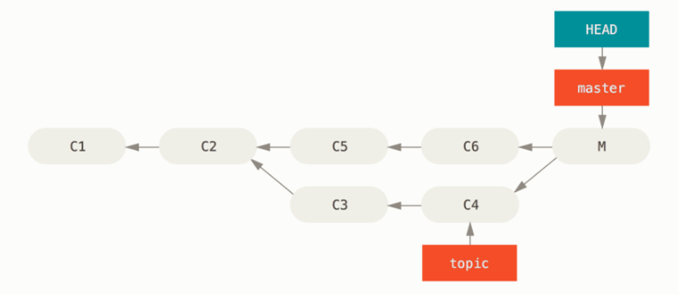
有两种方法来解决这个问题，这取决于你想要的结果是什么。
修复引用
如果这个不想要的合并提交只存在于你的本地仓库中，最简单且最好的解决方案是移动分支到你想要它指向的地方。 大多数情况下，如果你在错误的 git merge 后运行 git reset --hard HEAD~，这会重置分支指向所以它们看起来像这样：
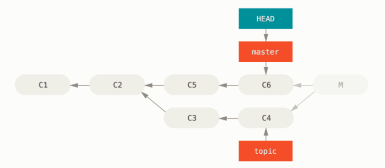
我们之前在 重置揭密 已经介绍了 reset，所以现在指出这里发生了什么并不是很困难。 让我们快速复习下：reset --hard 通常会经历三步：
移动 HEAD 指向的分支。 在本例中，我们想要移动
master到合并提交（C6）之前所在的位置。使索引看起来像 HEAD。
使工作目录看起来像索引。
这个方法的缺点是它会重写历史，在一个共享的仓库中这会造成问题的。 查阅 变基的风险 来了解更多可能发生的事情；用简单的话说就是如果其他人已经有你将要重写的提交，你应当避免使用 reset。 如果有任何其他提交在合并之后创建了，那么这个方法也会无效；移动引用实际上会丢失那些改动。
还原提交
如果移动分支指针并不适合你，Git 给你一个生成一个新提交的选项，提交将会撤消一个已存在提交的所有修改。 Git 称这个操作为“还原”，在这个特定的场景下，你可以像这样调用它：
1 | $ git revert -m 1 HEAD |
-m 1 标记指出 “mainline” 需要被保留下来的父结点。 当你引入一个合并到 HEAD（git merge topic），新提交有两个父结点：第一个是 HEAD（C6），第二个是将要合并入分支的最新提交（C4）。 在本例中，我们想要撤消所有由父结点 #2（C4）合并引入的修改，同时保留从父结点 #1（C4）开始的所有内容。
有还原提交的历史看起来像这样：
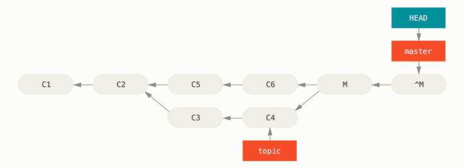
新的提交 ^M 与 C6 有完全一样的内容，所以从这儿开始就像合并从未发生过，除了“现在还没合并”的提交依然在 HEAD 的历史中。 如果你尝试再次合并 topic 到 master Git 会感到困惑：
1 | $ git merge topic |
topic 中并没有东西不能从 master 中追踪到达。 更糟的是，如果你在 topic 中增加工作然后再次合并，Git 只会引入被还原的合并 之后 的修改。
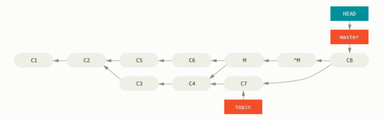
解决这个最好的方式是撤消还原原始的合并，因为现在你想要引入被还原出去的修改，然后 创建一个新的合并提交：
1 | $ git revert ^M |
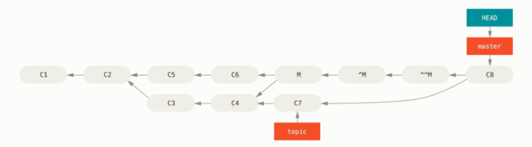
在本例中，M 与 ^M 抵消了。 ^^M 事实上合并入了 C3 与 C4 的修改，C8 合并了 C7 的修改，所以现在 topic 已经完全被合并了。
其他类型的合并
到目前为止我们介绍的都是通过一个叫作 “recursive” 的合并策略来正常处理的两个分支的正常合并。 然而还有其他方式来合并两个分支到一起。 让我们来快速介绍其中的几个。
我们的或他们的偏好
首先，有另一种我们可以通过 “recursive” 合并模式做的有用工作。 我们之前已经看到传递给 -X 的 ignore-all-space 与 ignore-space-change 选项，但是我们也可以告诉 Git 当它看见一个冲突时直接选择一边。
默认情况下，当 Git 看到两个分支合并中的冲突时，它会将合并冲突标记添加到你的代码中并标记文件为冲突状态来让你解决。 如果你希望 Git 简单地选择特定的一边并忽略另外一边而不是让你手动合并冲突，你可以传递给 merge 命令一个 -Xours 或 -Xtheirs 参数。
如果 Git 看到这个，它并不会增加冲突标记。 任何可以合并的区别，它会直接合并。 任何有冲突的区别，它会简单地选择你全局指定的一边，包括二进制文件。
如果我们回到之前我们使用的 “hello world” 例子中，我们可以看到合并入我们的分支时引发了冲突。
1 | $ git merge mundo |
然而如果我们运行时增加 -Xours 或 -Xtheirs 参数就不会有冲突。
1 | $ git merge -Xours mundo |
在上例中，它并不会为 “hello mundo” 与 “hola world” 标记合并冲突，它只会简单地选取 “hola world”。 然而，在那个分支上所有其他非冲突的改动都可以被成功地合并入。
这个选项也可以传递给我们之前看到的 git merge-file 命令，通过运行类似 git merge-file --ours 的命令来合并单个文件。
如果想要做类似的事情但是甚至并不想让 Git 尝试合并另外一边的修改，有一个更严格的选项，它是 “ours” 合并 策略。 这与 “ours” recursive 合并 选项 不同。
这本质上会做一次假的合并。 它会记录一个以两边分支作为父结点的新合并提交，但是它甚至根本不关注你正合并入的分支。 它只会简单地把当前分支的代码当作合并结果记录下来。
1 | $ git merge -s ours mundo |
你可以看到合并后与合并前我们的分支并没有任何区别。
当再次合并时从本质上欺骗 Git 认为那个分支已经合并过经常是很有用的。 例如，假设你有一个分叉的 release 分支并且在上面做了一些你想要在未来某个时候合并回 master 的工作。 与此同时 master 分支上的某些 bugfix 需要向后移植回 release 分支。 你可以合并 bugfix 分支进入 release 分支同时也 merge -s ours 合并进入你的 master 分支（即使那个修复已经在那儿了）这样当你之后再次合并 release 分支时，就不会有来自 bugfix 的冲突。
子树合并
子树合并的思想是你有两个项目，并且其中一个映射到另一个项目的一个子目录，或者反过来也行。 当你执行一个子树合并时，Git 通常可以自动计算出其中一个是另外一个的子树从而实现正确的合并。
我们来看一个例子如何将一个项目加入到一个已存在的项目中，然后将第二个项目的代码合并到第一个项目的子目录中。
首先，我们将 Rack 应用添加到你的项目里。 我们把 Rack 项目作为一个远程的引用添加到我们的项目里，然后检出到它自己的分支。
1 | $ git remote add rack_remote https://github.com/rack/rack |
现在在我们的 rack_branch 分支里就有 Rack 项目的根目录，而我们的项目则在 master 分支里。 如果你从一个分支切换到另一个分支，你可以看到它们的项目根目录是不同的：
1 | $ ls |
这个是一个比较奇怪的概念。 并不是仓库中的所有分支都是必须属于同一个项目的分支. 这并不常见，因为没啥用，但是却是在不同分支里包含两条完全不同提交历史的最简单的方法。
在这个例子中，我们希望将 Rack 项目拉到 master 项目中作为一个子目录。 我们可以在 Git 中执行 git read-tree 来实现。 你可以在 Git 内部原理 中查看更多 read-tree 的相关信息，现在你只需要知道它会读取一个分支的根目录树到当前的暂存区和工作目录里。 先切回你的 master 分支，将 rack_back 分支拉取到我们项目的 master 分支中的 rack 子目录。
1 | $ git read-tree --prefix=rack/ -u rack_branch |
当我们提交时，那个子目录中拥有所有 Rack 项目的文件 —— 就像我们直接从压缩包里复制出来的一样。 有趣的是你可以很容易地将一个分支的变更合并到另一个分支里。 所以，当 Rack 项目有更新时，我们可以切换到那个分支来拉取上游的变更。
1 | $ git checkout rack_branch |
接着，我们可以将这些变更合并回我们的 master 分支。 使用 --squash 选项和使用 -Xsubtree 选项（它采用递归合并策略），都可以用来可以拉取变更并且预填充提交信息。 （递归策略在这里是默认的，提到它是为了让读者有个清晰的概念。）
1 | $ git checkout master |
Rack 项目中所有的改动都被合并了，等待被提交到本地。 你也可以用相反的方法——在 master 分支上的 rack 子目录中做改动然后将它们合并入你的 rack_branch 分支中，之后你可能将其提交给项目维护着或者将它们推送到上游。
这给我们提供了一种类似子模块工作流的工作方式，但是它并不需要用到子模块（有关子模块的内容我们会在 子模块 中介绍）。 我们可以在自己的仓库中保持一些和其他项目相关的分支，偶尔使用子树合并将它们合并到我们的项目中。 某些时候这种方式很有用，例如当所有的代码都提交到一个地方的时候。 然而，它同时也有缺点，它更加复杂且更容易让人犯错，例如重复合并改动或者不小心将分支提交到一个无关的仓库上去。
另外一个有点奇怪的地方是，当你想查看 rack 子目录和 rack_branch 分支的差异——来确定你是否需要合并它们——你不能使用普通的 diff 命令。 取而代之的是，你必须使用 git diff-tree 来和你的目标分支做比较：
1 | $ git diff-tree -p rack_branch |
或者，将你的 rack 子目和最近一次从服务器上抓取的 master 分支进行比较，你可以运行：
1 | $ git diff-tree -p rack_remote/master |
使用 Git 调试
Git 也提供了两个工具来辅助你调试项目中的问题。 由于 Git 被设计成适用于几乎所有类型的项目，这些工具是比较通用的，但它们可以在出现问题的时候帮助你找到 bug 或者错误。
文件标注
如果你在追踪代码中的一个 bug，并且想知道是什么时候以及为何会引入，文件标注通常是最好用的工具。 它展示了文件中每一行最后一次修改的提交。 所以，如果你在代码中看到一个有问题的方法，你可以使用 git blame 标注这个文件，查看这个方法每一行的最后修改时间以及是被谁修改的。 这个例子使用 -L 选项来限制输出范围在第12至22行：
1 | $ git blame -L 12,22 simplegit.rb |
请注意，第一个字段是最后一次修改该行的提交的部分 SHA-1 值。 接下来两个字段的值是从提交中提取出来的——作者的名字以及提交的时间——所以你就可以很轻易地找到是谁在什么时候修改了那一行。 接下来就是行号和文件内容。 注意一下 ^4832fe2 这个提交的那些行，这些指的是这个文件第一次提交的那些行。 这个提交是这个文件第一次加入到这个项目时的提交，并且这些行从未被修改过。 这会带来小小的困惑，因为你已经至少看到三种 Git 使用 ^ 来修饰一个提交的 SHA-1 值的不同含义，但这里确实就是这个意思。
另一件比较酷的事情是 Git 不会显式地记录文件的重命名。 它会记录快照，然后在事后尝试计算出重命名的动作。 这其中有一个很有意思的特性就是你可以让 Git 找出所有的代码移动。 如果你在 git blame 后面加上一个 -C，Git 会分析你正在标注的文件，并且尝试找出文件中从别的地方复制过来的代码片段的原始出处。 比如，你将 GITServerHandler.m 这个文件拆分为数个文件，其中一个文件是 GITPackUpload.m。 对 GITPackUpload.m 执行带 -C 参数的 blame 命令，你就可以看到代码块的原始出处：
1 | $ git blame -C -L 141,153 GITPackUpload.m |
这个功能很有用。 通常来说，你会认为复制代码过来的那个提交是最原始的提交，因为那是你第一次在这个文件中修改了这几行。 但 Git 会告诉你，你第一次写这几行代码的那个提交才是原始提交，即使这是在另外一个文件里写的。
二分查找
当你知道问题是在哪里引入的情况下文件标注可以帮助你查找问题。 如果你不知道哪里出了问题，并且自从上次可以正常运行到现在已经有数十个或者上百个提交，这个时候你可以使用 git bisect 来帮助查找。 bisect 命令会对你的提交历史进行二分查找来帮助你尽快找到是哪一个提交引入了问题。
假设你刚刚在线上环境部署了你的代码，接着收到一些 bug 反馈，但这些 bug 在你之前的开发环境里没有出现过，这让你百思不得其解。 你重新查看了你的代码，发现这个问题是可以被重现的，但是你不知道哪里出了问题。 你可以用二分法来找到这个问题。 首先执行 git bisect start 来启动，接着执行 git bisect bad 来告诉系统当前你所在的提交是有问题的。 然后你必须告诉 bisect 已知的最后一次正常状态是哪次提交，使用 git bisect good [good_commit]：
1 | $ git bisect start |
Git 发现在你标记为正常的提交（v1.0）和当前的错误版本之间有大约12次提交，于是 Git 检出中间的那个提交。 现在你可以执行测试，看看在这个提交下问题是不是还是存在。 如果还存在，说明问题是在这个提交之前引入的；如果问题不存在，说明问题是在这个提交之后引入的。 假设测试结果是没有问题的，你可以通过 git bisect good 来告诉 Git，然后继续寻找。
1 | $ git bisect good |
现在你在另一个提交上了，这个提交是刚刚那个测试通过的提交和有问题的提交的中点。 你再一次执行测试，发现这个提交下是有问题的，因此你可以通过 git bisect bad 告诉 Git：
1 | $ git bisect bad |
这个提交是正常的，现在 Git 拥有的信息已经可以确定引入问题的位置在哪里。 它会告诉你第一个错误提交的 SHA-1 值并显示一些提交说明，以及哪些文件在那次提交里修改过，这样你可以找出引入 bug 的根源：
1 | $ git bisect good |
当你完成这些操作之后，你应该执行 git bisect reset 重置你的 HEAD 指针到最开始的位置，否则你会停留在一个很奇怪的状态：
1 | $ git bisect reset |
这是一个可以帮助你在几分钟内从数百个提交中找到 bug 的强大工具。 事实上，如果你有一个脚本在项目是正常的情况下返回 0，在不正常的情况下返回非 0，你可以使 git bisect 自动化这些操作。 首先，你设定好项目正常以及不正常所在提交的二分查找范围。 你可以通过 bisect start 命令的参数来设定这两个提交，第一个参数是项目不正常的提交，第二个参数是项目正常的提交：
1 | $ git bisect start HEAD v1.0 |
Git 会自动在每个被检出的提交里执行 test-error.sh 直到找到第一个项目不正常的提交。 你也可以执行 make 或者 make tests 或者其他东西来进行自动化测试。
子模块
有种情况我们经常会遇到：某个工作中的项目需要包含并使用另一个项目。 也许是第三方库，或者你独立开发的，用于多个父项目的库。 现在问题来了：你想要把它们当做两个独立的项目，同时又想在一个项目中使用另一个。
我们举一个例子。 假设你正在开发一个网站然后创建了 Atom 订阅。 你决定使用一个库，而不是写自己的 Atom 生成代码。 你可能不得不通过 CPAN 安装或 Ruby gem 来包含共享库中的代码，或者将源代码直接拷贝到自己的项目中。 如果将这个库包含进来，那么无论用何种方式都很难定制它，部署则更加困难，因为你必须确保每一个客户端都包含该库。 如果将代码复制到自己的项目中，那么你做的任何自定义修改都会使合并上游的改动变得困难。
Git 通过子模块来解决这个问题。 子模块允许你将一个 Git 仓库作为另一个 Git 仓库的子目录。 它能让你将另一个仓库克隆到自己的项目中，同时还保持提交的独立。
开始使用子模块
我们将要演示如何在一个被分成一个主项目与几个子项目的项目上开发。
我们首先将一个已存在的 Git 仓库添加为正在工作的仓库的子模块。 你可以通过在 git submodule add 命令后面加上想要跟踪的项目 URL 来添加新的子模块。 在本例中，我们将会添加一个名为 “DbConnector” 的库。
1 | $ git submodule add https://github.com/chaconinc/DbConnector |
默认情况下，子模块会将子项目放到一个与仓库同名的目录中，本例中是 “DbConnector”。 如果你想要放到其他地方，那么可以在命令结尾添加一个不同的路径。
如果这时运行 git status，你会注意到几件事。
1 | $ git status |
首先应当注意到新的 .gitmodules 文件。 该配置文件保存了项目 URL 与已经拉取的本地目录之间的映射：
1 | $ cat .gitmodules |
如果有多个子模块，该文件中就会有多条记录。 要重点注意的是，该文件也像 .gitignore 文件一样受到（通过）版本控制。 它会和该项目的其他部分一同被拉取推送。 这就是克隆该项目的人知道去哪获得子模块的原因。
在 git status 输出中列出的另一个是项目文件夹记录。 如果你运行 git diff，会看到类似下面的信息：
1 | $ git diff --cached DbConnector |
虽然 DbConnector 是工作目录中的一个子目录，但 Git 还是会将它视作一个子模块。当你不在那个目录中时，Git 并不会跟踪它的内容， 而是将它看作该仓库中的一个特殊提交。
如果你想看到更漂亮的差异输出，可以给 git diff 传递 --submodule 选项。
1 | $ git diff --cached --submodule |
当你提交时，会看到类似下面的信息：
1 | $ git commit -am 'added DbConnector module' |
注意 DbConnector 记录的 160000 模式。 这是 Git 中的一种特殊模式，它本质上意味着你是将一次提交记作一项目录记录的，而非将它记录成一个子目录或者一个文件。
克隆含有子模块的项目
接下来我们将会克隆一个含有子模块的项目。 当你在克隆这样的项目时，默认会包含该子模块目录，但其中还没有任何文件：
1 | $ git clone https://github.com/chaconinc/MainProject |
其中有 DbConnector 目录，不过是空的。 你必须运行两个命令：git submodule init 用来初始化本地配置文件，而 git submodule update 则从该项目中抓取所有数据并检出父项目中列出的合适的提交。
1 | $ git submodule init |
现在 DbConnector 子目录是处在和之前提交时相同的状态了。
不过还有更简单一点的方式。 如果给 git clone 命令传递 --recursive 选项，它就会自动初始化并更新仓库中的每一个子模块。
1 | $ git clone --recursive https://github.com/chaconinc/MainProject |
在包含子模块的项目上工作
现在我们有一份包含子模块的项目副本，我们将会同时在主项目和子模块项目上与队员协作。
拉取上游修改
在项目中使用子模块的最简模型，就是只使用子项目并不时地获取更新，而并不在你的检出中进行任何更改。 我们来看一个简单的例子。
如果想要在子模块中查看新工作，可以进入到目录中运行 git fetch 与 git merge，合并上游分支来更新本地代码。
1 | $ git fetch |
如果你现在返回到主项目并运行 git diff --submodule，就会看到子模块被更新的同时获得了一个包含新添加提交的列表。 如果你不想每次运行 git diff 时都输入 --submodle，那么可以将 diff.submodule 设置为 “log” 来将其作为默认行为。
1 | $ git config --global diff.submodule log |
如果在此时提交，那么你会将子模块锁定为其他人更新时的新代码。
如果你不想在子目录中手动抓取与合并，那么还有种更容易的方式。 运行 git submodule update --remote，Git 将会进入子模块然后抓取并更新。
1 | $ git submodule update --remote DbConnector |
此命令默认会假定你想要更新并检出子模块仓库的 master 分支。 不过你也可以设置为想要的其他分支。 例如，你想要 DbConnector 子模块跟踪仓库的 “stable” 分支，那么既可以在 .gitmodules 文件中设置（这样其他人也可以跟踪它），也可以只在本地的 .git/config 文件中设置。 让我们在 .gitmodules 文件中设置它：
1 | $ git config -f .gitmodules submodule.DbConnector.branch stable |
如果不用 -f .gitmodules 选项，那么它只会为你做修改。但是在仓库中保留跟踪信息更有意义一些，因为其他人也可以得到同样的效果。
这时我们运行 git status，Git 会显示子模块中有“新提交”。
1 | $ git status |
如果你设置了配置选项 status.submodulesummary，Git 也会显示你的子模块的更改摘要：
1 | $ git config status.submodulesummary 1 |
这时如果运行 git diff，可以看到我们修改了 .gitmodules 文件，同时还有几个已拉取的提交需要提交到我们自己的子模块项目中。
1 | $ git diff |
这非常有趣，因为我们可以直接看到将要提交到子模块中的提交日志。 提交之后，你也可以运行 git log -p 查看这个信息。
1 | $ git log -p --submodule |
当运行 git submodule update --remote 时，Git 默认会尝试更新所有子模块，所以如果有很多子模块的话，你可以传递想要更新的子模块的名字。
在子模块上工作
你很有可能正在使用子模块，因为你确实想在子模块中编写代码的同时，还想在主项目上编写代码（或者跨子模块工作）。 否则你大概只能用简单的依赖管理系统（如 Maven 或 Rubygems）来替代了。
现在我们将通过一个例子来演示如何在子模块与主项目中同时做修改，以及如何同时提交与发布那些修改。
到目前为止，当我们运行 git submodule update 从子模块仓库中抓取修改时，Git 将会获得这些改动并更新子目录中的文件，但是会将子仓库留在一个称作“游离的 HEAD”的状态。 这意味着没有本地工作分支（例如 “master” ）跟踪改动。 所以你做的任何改动都不会被跟踪。
为了将子模块设置得更容易进入并修改，你需要做两件事。 首先，进入每个子模块并检出其相应的工作分支。 接着，若你做了更改就需要告诉 Git 它该做什么，然后运行 git submodule update --remote 来从上游拉取新工作。 你可以选择将它们合并到你的本地工作中，也可以尝试将你的工作变基到新的更改上。
首先，让我们进入子模块目录然后检出一个分支。
1 | $ git checkout stable |
然后尝试用 “merge” 选项。 为了手动指定它，我们只需给 update 添加 --merge 选项即可。 这时我们将会看到服务器上的这个子模块有一个改动并且它被合并了进来。
1 | $ git submodule update --remote --merge |
如果我们进入 DbConnector 目录，可以发现新的改动已经合并入本地 stable 分支。 现在让我们看看当我们对库做一些本地的改动而同时其他人推送另外一个修改到上游时会发生什么。
1 | $ cd DbConnector/ |
如果我们现在更新子模块，就会看到当我们在本地做了更改时上游也有一个改动，我们需要将它并入本地。
1 | $ git submodule update --remote --rebase |
如果你忘记 --rebase 或 --merge，Git 会将子模块更新为服务器上的状态。并且会将项目重置为一个游离的 HEAD 状态。
1 | $ git submodule update --remote |
即便这真的发生了也不要紧，你只需回到目录中再次检出你的分支（即还包含着你的工作的分支）然后手动地合并或变基 origin/stable（或任何一个你想要的远程分支）就行了。
如果你没有提交子模块的改动，那么运行一个子模块更新也不会出现问题，此时 Git 会只抓取更改而并不会覆盖子模块目录中未保存的工作。
1 | $ git submodule update --remote |
如果你做了一些与上游改动冲突的改动，当运行更新时 Git 会让你知道。
1 | $ git submodule update --remote --merge |
你可以进入子模块目录中然后就像平时那样修复冲突。
发布子模块改动
现在我们的子模块目录中有一些改动。 其中有一些是我们通过更新从上游引入的，而另一些是本地生成的，由于我们还没有推送它们，所以对任何其他人都不可用。
1 | $ git diff |
如果我们在主项目中提交并推送但并不推送子模块上的改动，其他尝试检出我们修改的人会遇到麻烦，因为他们无法得到依赖的子模块改动。 那些改动只存在于我们本地的拷贝中。
为了确保这不会发生，你可以让 Git 在推送到主项目前检查所有子模块是否已推送。 git push 命令接受可以设置为 “check” 或 “on-demand” 的 --recurse-submodules 参数。 如果任何提交的子模块改动没有推送那么 “check” 选项会直接使 push 操作失败。
1 | $ git push --recurse-submodules=check |
如你所见，它也给我们了一些有用的建议，指导接下来该如何做。 最简单的选项是进入每一个子模块中然后手动推送到远程仓库，确保它们能被外部访问到，之后再次尝试这次推送。
另一个选项是使用 “on-demand” 值，它会尝试为你这样做。
1 | $ git push --recurse-submodules=on-demand |
如你所见，Git 进入到 DbConnector 模块中然后在推送主项目前推送了它。 如果那个子模块因为某些原因推送失败，主项目也会推送失败。
合并子模块改动
如果你其他人同时改动了一个子模块引用，那么可能会遇到一些问题。 也就是说，如果子模块的历史已经分叉并且在父项目中分别提交到了分叉的分支上，那么你需要做一些工作来修复它。
如果一个提交是另一个的直接祖先（一个快进式合并），那么 Git 会简单地选择之后的提交来合并，这样没什么问题。
不过，Git 甚至不会尝试去进行一次简单的合并。 如果子模块提交已经分叉且需要合并，那你会得到类似下面的信息：
1 | $ git pull |
所以本质上 Git 在这里指出了子模块历史中的两个分支记录点已经分叉并且需要合并。 它将其解释为 “merge following commits not found” （未找到接下来需要合并的提交），虽然这有点令人困惑，不过之后我们会解释为什么是这样。
为了解决这个问题，你需要弄清楚子模块应该处于哪种状态。 奇怪的是，Git 并不会给你多少能帮你摆脱困境的信息，甚至连两边提交历史中的 SHA-1 值都没有。 幸运的是，这很容易解决。 如果你运行 git diff，就会得到试图合并的两个分支中记录的提交的 SHA-1 值。
1 | $ git diff |
所以，在本例中，eb41d76 是我们的子模块中大家共有的提交，而 c771610 是上游拥有的提交。 如果我们进入子模块目录中，它应该已经在 eb41d76 上了，因为合并没有动过它。 如果不是的话，无论什么原因，你都可以简单地创建并检出一个指向它的分支。
来自另一边的提交的 SHA-1 值比较重要。 它是需要你来合并解决的。 你可以尝试直接通过 SHA-1 合并，也可以为它创建一个分支然后尝试合并。 我们建议后者，哪怕只是为了一个更漂亮的合并提交信息。
所以，我们将会进入子模块目录，基于 git diff 的第二个 SHA 创建一个分支然后手动合并。
1 | $ cd DbConnector |
我们在这儿得到了一个真正的合并冲突，所以如果想要解决并提交它，那么只需简单地通过结果来更新主项目。
1 | $ vim src/main.c (1) |
首先解决冲突
然后返回到主项目目录中
再次检查 SHA-1 值
解决冲突的子模块记录
提交我们的合并
这可能会让你有点儿困惑，但它确实不难。
有趣的是，Git 还能处理另一种情况。 如果子模块目录中存在着这样一个合并提交，它的历史中包含了的两边的提交，那么 Git 会建议你将它作为一个可行的解决方案。 它看到有人在子模块项目的某一点上合并了包含这两次提交的分支，所以你可能想要那个。
这就是为什么前面的错误信息是 “merge following commits not found”，因为它不能 这样 做。 它让人困惑是因为谁能想到它会尝试这样做？
如果它找到了一个可以接受的合并提交，你会看到类似下面的信息：
1 | $ git merge origin/master |
它会建议你更新索引，就像你运行了 git add 那样，这样会清除冲突然后提交。不过你可能不应该这样做。你可以轻松地进入子模块目录，查看差异是什么，快进到这次提交，恰当地测试，然后提交它。
1 | $ cd DbConnector/ |
这些命令完成了同一件事，但是通过这种方式你至少可以验证工作是否有效，以及当你在完成时可以确保子模块目录中有你的代码。
子模块技巧
你可以做几件事情来让用子模块工作轻松一点儿。
子模块遍历
有一个 foreach 子模块命令，它能在每一个子模块中运行任意命令。 如果项目中包含了大量子模块，这会非常有用。
例如，假设我们想要开始开发一项新功能或者修复一些错误，并且需要在几个子模块内工作。 我们可以轻松地保存所有子模块的工作进度。
1 | $ git submodule foreach 'git stash' |
然后我们可以创建一个新分支，并将所有子模块都切换过去。
1 | $ git submodule foreach 'git checkout -b featureA' |
你应该明白。 能够生成一个主项目与所有子项目的改动的统一差异是非常有用的。
1 | $ git diff; git submodule foreach 'git diff' |
在这里，我们看到子模块中定义了一个函数并在主项目中调用了它。 这明显是个简化了的例子，但是希望它能让你明白这种方法的用处。
有用的别名
你可能想为其中一些命令设置别名，因为它们可能会非常长而你又不能设置选项作为它们的默认选项。 我们在 Git 别名 介绍了设置 Git 别名，但是如果你计划在 Git 中大量使用子模块的话，这里有一些例子。
1 | $ git config alias.sdiff '!'"git diff && git submodule foreach 'git diff'" |
这样当你想要更新子模块时可以简单地运行 git supdate，或 git spush 检查子模块依赖后推送。
子模块的问题
然而使用子模块还是有一些小问题。
例如在有子模块的项目中切换分支可能会造成麻烦。 如果你创建一个新分支，在其中添加一个子模块，之后切换到没有该子模块的分支上时，你仍然会有一个还未跟踪的子模块目录。
1 | $ git checkout -b add-crypto |
移除那个目录并不困难，但是有一个目录在那儿会让人有一点困惑。 如果你移除它然后切换回有那个子模块的分支，需要运行 submodule update --init 来重新建立和填充。
1 | $ git clean -fdx |
再说一遍，这真的不难，只是会让人有点儿困惑。
另一个主要的告诫是许多人遇到了将子目录转换为子模块的问题。 如果你在项目中已经跟踪了一些文件，然后想要将它们移动到一个子模块中，那么请务必小心，否则 Git 会对你发脾气。 假设项目内有一些文件在子目录中，你想要将其转换为一个子模块。 如果删除子目录然后运行 submodule add，Git 会朝你大喊：
1 | $ rm -Rf CryptoLibrary/ |
你必须要先取消暂存 CryptoLibrary 目录。 然后才可以添加子模块：
1 | $ git rm -r CryptoLibrary |
现在假设你在一个分支下做了这样的工作。 如果尝试切换回的分支中那些文件还在子目录而非子模块中时——你会得到这个错误：
1 | $ git checkout master |
你可以通过 checkout -f 来强制切换，但是要小心，如果其中还有未保存的修改，这个命令会把它们覆盖掉。
1 | $ git checkout -f master |
当你切换回来之后，因为某些原因你得到了一个空的 CryptoLibrary 目录，并且 git submodule update 也无法修复它。 你需要进入到子模块目录中运行 git checkout . 来找回所有的文件。 你也可以通过 submodule foreach 脚本来为多个子模块运行它。
要特别注意的是，近来子模块会将它们的所有 Git 数据保存在顶级项目的 .git 目录中，所以不像旧版本的 Git，摧毁一个子模块目录并不会丢失任何提交或分支。
拥有了这些工具，使用子模块会成为可以在几个相关但却分离的项目上同时开发的相当简单有效的方法。